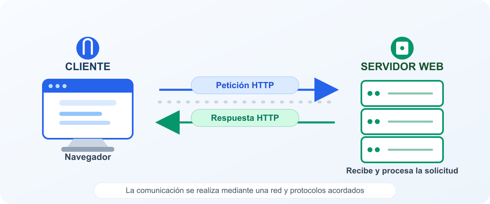
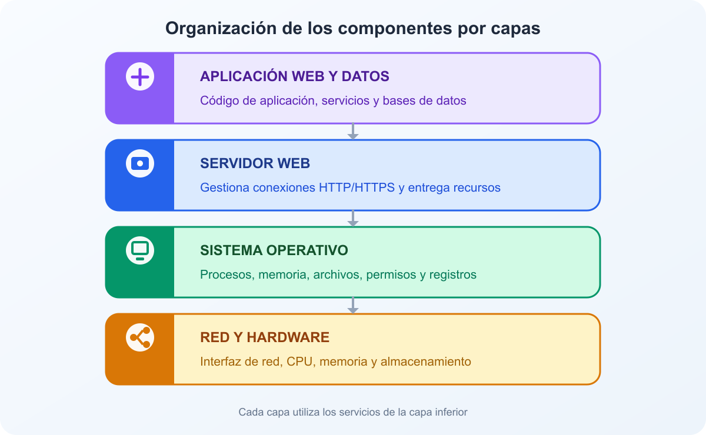
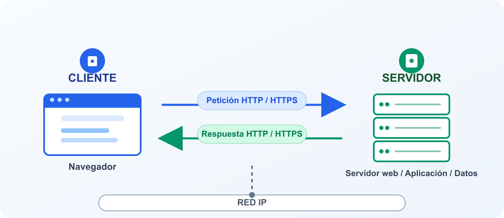
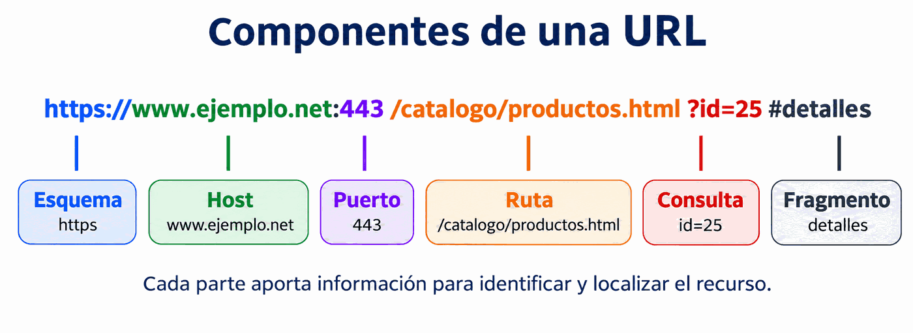
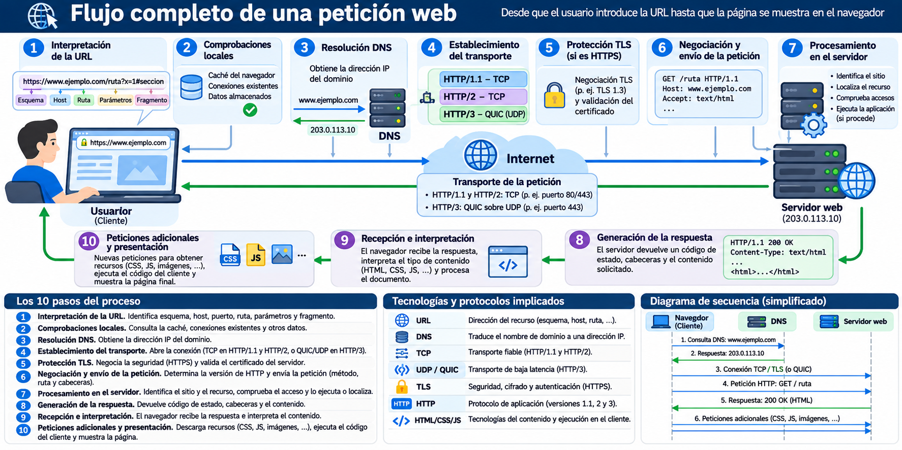

SERVICIO WEB
SERVICIO WEB
INTRODUCCIÓN A LOS SERVICIOS WEB
En este capítulo se introduce el concepto de servicio web y se explican sus características principales.
CONCEPTO DE SERVICIO WEB Y SERVIDOR WEB
Un servicio web, en el contexto de este tema, es un servicio de red que permite acceder a recursos y aplicaciones mediante tecnologías y protocolos web. Normalmente, el usuario utiliza un navegador para solicitar una página, una imagen, un documento o una funcionalidad; un sistema remoto recibe la petición y devuelve una respuesta que el navegador interpreta.
Conviene distinguir tres conceptos relacionados:
- La web es el conjunto de recursos y aplicaciones interconectados que utilizan tecnologías como HTTP, HTML y las URL.
- Un servidor web es el programa que acepta peticiones HTTP o HTTPS y entrega los recursos solicitados o deriva la petición a otros componentes.
- El equipo servidor es el ordenador físico o virtual donde se ejecuta ese programa. Por tanto, servidor web no significa necesariamente un ordenador dedicado: puede ser un proceso que se ejecuta en una máquina que también ofrece otros servicios.
El servidor web puede entregar contenido estático, como archivos HTML, imágenes, hojas de estilo o documentos, o participar en la generación de contenido dinámico. En este último caso, la petición puede ser procesada por una aplicación que consulta datos, aplica reglas de negocio y genera una respuesta personalizada. El servidor web actúa entonces como punto de entrada y coordinador de la comunicación, aunque no necesariamente ejecuta por sí mismo toda la lógica de la aplicación.
Nota
En sentido estricto, la expresión servicio web también se utiliza en otros ámbitos para describir interfaces de software entre aplicaciones (por ejemplo, API REST o servicios SOAP).
En este material se empleará principalmente en el sentido de servicio de publicación y acceso a sitios y aplicaciones web, indicando expresamente cuándo se hable de una API.
EVOLUCIÓN DE LOS SERVICIOS WEB
Los primeros servidores web se diseñaron para publicar documentos y permitir que otros equipos los consultaran a través de una red. La interacción era sencilla: el cliente solicitaba un recurso identificado mediante una URL y el servidor devolvía el contenido. Las páginas estaban formadas principalmente por documentos estáticos.
Con la evolución de HTML, los navegadores y las conexiones a Internet, las páginas incorporaron imágenes, hojas de estilo, scripts y otros recursos. Una sola página pasó a requerir varias peticiones al servidor. Más adelante se generalizaron las aplicaciones dinámicas, que generan contenidos según el usuario, la sesión, los datos disponibles o las acciones realizadas.
La web actual integra aplicaciones complejas, servicios distribuidos, almacenamiento remoto, bases de datos, autenticación, interfaces para dispositivos móviles y comunicación entre sistemas. También se ha reforzado la seguridad mediante HTTPS y TLS. En consecuencia, un servidor web moderno suele formar parte de una arquitectura más amplia, con servidores de aplicaciones, bases de datos, sistemas de caché, proxies y mecanismos de supervisión.
Esta evolución no significa que los contenidos estáticos hayan desaparecido. Siguen siendo habituales y, cuando se sirven directamente desde el servidor o desde una red de distribución de contenidos (CDN), pueden ofrecer un rendimiento elevado y una infraestructura relativamente sencilla.
ARQUITECTURA CLIENTE-SERVIDOR
La arquitectura cliente-servidor distribuye las responsabilidades entre dos partes. El cliente inicia la comunicación y solicita un recurso o una operación. El servidor permanece preparado para recibir solicitudes, procesa cada petición y devuelve una respuesta. En la navegación web, el cliente suele ser un navegador y el protocolo de aplicación habitual es HTTP o HTTPS.

De forma simplificada, el intercambio sigue estos pasos:
- El usuario introduce una URL o pulsa un enlace.
- El navegador determina a qué servidor debe conectarse; para ello puede necesitar resolver el nombre mediante DNS.
- Se establece una conexión de transporte con el servidor. En HTTPS se negocia además una conexión protegida mediante TLS.
- El navegador envía una petición HTTP que identifica el recurso y puede incluir cabeceras, cookies o datos.
- El servidor interpreta la petición, comprueba si puede atenderla y obtiene o genera el contenido.
- El servidor devuelve una respuesta HTTP con un código de estado, cabeceras y, normalmente, un cuerpo.
- El navegador interpreta la respuesta y presenta el contenido. Si necesita otros recursos, puede realizar nuevas peticiones.
El modelo es lógico, no necesariamente físico. Un único equipo puede desempeñar varios papeles y un servicio puede estar repartido entre muchas máquinas. Por ejemplo, el navegador se comunica con un servidor frontal, que consulta un servidor de aplicaciones y este accede a una base de datos. Para el usuario, el conjunto puede presentarse como un único sitio web.
COMPONENTES DE UN SERVICIO WEB
Un servicio web funcional depende de varios componentes que colaboran. La separación ayuda a comprender dónde puede encontrarse un problema y qué elementos deben configurarse y protegerse.
-
Cliente web o navegador
Es el programa que utiliza el usuario para acceder a los recursos. Envía peticiones, recibe respuestas, interpreta HTML y CSS, ejecuta JavaScript y presenta el resultado. También gestiona elementos como cookies, caché, certificados y sesiones. -
Servidor web
Es el software que escucha en uno o varios puertos, acepta conexiones y procesa peticiones HTTP/HTTPS. Puede entregar archivos directamente, aplicar reglas de acceso, registrar actividad y reenviar solicitudes a otros servicios. Su configuración determina, entre otras cosas, qué sitios publica y cómo responde a cada petición. -
Sistema operativo
Proporciona los recursos y servicios básicos para ejecutar el servidor web: procesos, memoria, sistema de archivos, usuarios, permisos, red y registros. La seguridad del servicio depende en buena medida de la configuración y actualización del sistema operativo. -
Sistema de almacenamiento
Contiene los archivos publicados, la configuración del servidor, los registros y, en algunos casos, datos de la aplicación. Puede ser almacenamiento local, un volumen remoto o un servicio de almacenamiento externo. Es importante organizarlo y establecer permisos y copias de seguridad. -
Red de comunicaciones
Permite que clientes y servidores intercambien información. Incluye interfaces de red, direccionamiento IP, encaminamiento, cortafuegos, puertos y, habitualmente, servicios DNS. Una configuración incorrecta puede impedir el acceso aunque el servidor web esté correctamente instalado. -
Aplicaciones y bases de datos
Las aplicaciones implementan la lógica que produce respuestas dinámicas. Pueden consultar bases de datos, validar información, gestionar usuarios o comunicarse con otros servicios. La base de datos almacena información persistente, pero no suele ser el servidor web quien la presenta directamente al navegador: normalmente interviene una aplicación.
Organización de los componentes por capas
La figura representa una posible organización por capas, no una obligación de diseño. En instalaciones pequeñas, varias capas pueden estar en el mismo equipo. En sistemas de mayor tamaño, cada función puede distribuirse entre servidores distintos para mejorar la escalabilidad, la disponibilidad o la seguridad.

TIPOS DE SERVIDORES WEB Y PRINCIPALES SOLUCIONES
Existen distintas implementaciones de software servidor web. Todas permiten atender peticiones web, pero difieren en arquitectura, integración con el sistema operativo, modelo de configuración, extensibilidad y escenarios de uso. La elección depende de los requisitos del servicio, la experiencia del equipo administrador, la infraestructura disponible y las necesidades de rendimiento y mantenimiento.
-
Apache HTTP Server
Es un servidor web de propósito general, de código abierto y con una arquitectura extensible mediante módulos. Se utiliza en numerosos entornos y dispone de una amplia documentación y ecosistema. Su configuración permite adaptar el comportamiento del servidor a distintos escenarios de alojamiento. -
Nginx
Es un servidor web de código abierto conocido por su arquitectura orientada a gestionar muchas conexiones concurrentes con un consumo eficiente de recursos. Además de servir contenido estático, se utiliza con frecuencia como proxy inverso, equilibrador de carga y componente frontal de aplicaciones. -
Microsoft Internet Information Services (IIS)
Es el servidor web de Microsoft integrado en determinadas ediciones de Windows Server. Se administra mediante herramientas propias del entorno Windows y ofrece integración con tecnologías y servicios de la plataforma Microsoft, como ASP.NET. -
Otras soluciones
Existen servidores y plataformas especializadas, así como servidores integrados en entornos de desarrollo o aplicaciones. También es habitual que una aplicación incorpore su propio servidor HTTP para pruebas o para determinados despliegues. En producción, la arquitectura puede situar delante un servidor web o proxy inverso dedicado.
No debe confundirse el servidor web con el servidor de aplicaciones. El primero gestiona principalmente la comunicación HTTP y la entrega de recursos; el segundo ejecuta la lógica de una aplicación. En algunos productos ambas funciones están integradas, mientras que en otros se separan y se comunican entre sí.
Tabla comparativa orientativa
La siguiente tabla es una comparación introductoria, no una clasificación de calidad. Ninguna solución es la mejor en todos los escenarios. La selección debe considerar los requisitos técnicos, la compatibilidad con las aplicaciones, la seguridad, el soporte, la facilidad de administración y los conocimientos disponibles.
| Solución | Características generales | Entornos habituales |
|---|---|---|
| Apache HTTP Server | Extensible mediante módulos; muy configurable; amplia implantación. | Servidores Linux y Windows; alojamiento web general. |
| Nginx | Gestión eficiente de conexiones; frecuente como proxy inverso y balanceador. | Sitios con muchas conexiones; arquitectura distribuida. |
| Microsoft IIS | Integración con Windows Server y tecnologías Microsoft. | Infraestructuras basadas en Windows y aplicaciones ASP.NET. |
FUNDAMENTOS DE LOS PROTOCOLOS WEB
MODELO DE COMUNICACIÓN CLIENTE-SERVIDOR
La navegación web se basa principalmente en un modelo de comunicación cliente-servidor. El cliente, normalmente un navegador, inicia una comunicación para solicitar un recurso o realizar una operación. El servidor recibe la petición, la interpreta y devuelve una respuesta. En la web, el protocolo de aplicación que organiza este intercambio es HTTP (Hypertext Transfer Protocol). Cuando la comunicación está protegida mediante TLS, se utiliza HTTPS.
HTTP funciona siguiendo un modelo de petición y respuesta. El cliente envía una petición que identifica el recurso y la operación que desea realizar. El servidor devuelve una respuesta con información sobre el resultado y, cuando corresponde, el contenido solicitado. Una misma página puede requerir numerosas peticiones: una para el documento HTML, otras para imágenes, hojas de estilo, scripts, fuentes y datos adicionales.
Es importante distinguir los niveles que intervienen en la comunicación:
- Aplicación: HTTP define el formato y el significado de las peticiones y respuestas.
- Transporte: tradicionalmente TCP proporciona un canal de comunicación fiable para HTTP/1.1 y HTTP/2. HTTP/3 utiliza QUIC, que funciona sobre UDP e integra mecanismos de transporte seguro.
- Red: IP permite direccionar los paquetes y encaminarlos entre redes.
- Acceso a la red: las tecnologías cableadas o inalámbricas permiten transmitir los datos por el medio físico o radioeléctrico.
El navegador no necesita conocer cómo está organizada internamente la aplicación del servidor. Solo necesita comunicarse utilizando los protocolos y formatos acordados. Detrás del servidor que recibe la petición pueden existir otros servidores, aplicaciones y bases de datos.

PROTOCOLO HTTP
CARACTERÍSTICAS Y FUNCIONAMIENTO
HTTP es un protocolo de aplicación diseñado para transferir recursos web. Es un protocolo de carácter general: aunque su nombre histórico hace referencia a documentos de hipertexto, actualmente transporta muchos tipos de contenido, como imágenes, vídeo, audio, documentos, datos estructurados y respuestas de aplicaciones.
Entre sus características principales se encuentran:
- Modelo petición-respuesta: el cliente formula una petición y el servidor devuelve una respuesta.
- Independencia del contenido: HTTP puede transportar distintos formatos de datos. El tipo de contenido se indica normalmente mediante la cabecera
Content-Type. - Identificación de recursos: los recursos se identifican mediante URI, habitualmente URL.
- Uso de métodos: el método indica la intención de la petición, por ejemplo, obtener un recurso o enviar datos.
- Uso de cabeceras: permiten transmitir metadatos sobre la petición, la respuesta, el cliente y el contenido.
- Sin estado a nivel de protocolo: cada petición se interpreta, en principio, de forma independiente. Las aplicaciones pueden mantener sesiones mediante cookies, tokens u otros mecanismos.
- Extensibilidad: se pueden incorporar nuevas cabeceras y métodos, respetando las reglas del protocolo.
Decir que HTTP es un protocolo sin estado no significa que una aplicación web no pueda recordar al usuario. Significa que el protocolo no mantiene automáticamente el contexto de una petición anterior para interpretar la siguiente. Para conservar una sesión, la aplicación suele utilizar identificadores de sesión, cookies o mecanismos equivalentes.
ESTRUCTURA DE UNA PETICIÓN HTTP
Una petición HTTP contiene información que permite al servidor saber qué se solicita y cómo debe interpretarlo. Conceptualmente incluye:
- Línea inicial: método, recurso solicitado y, en HTTP/1.1, versión del protocolo.
- Cabeceras: información adicional sobre la petición.
- Línea en blanco: separa las cabeceras del cuerpo.
- Cuerpo opcional: datos enviados por el cliente, por ejemplo, los campos de un formulario o información en formato JSON.
Ejemplo ilustrativo de una petición HTTP/1.1:
GET /catalogo/productos.html HTTP/1.1
Host: www.ejemplo.net
User-Agent: Mozilla/5.0 (Windows NT 10.0; Win64; x64) AppleWebKit/537.36 (KHTML, like Gecko) Chrome/58.0.3029.110 Safari/537.3
Accept: text/html
Accept-Language: es
Connection: keep-alive
En este ejemplo:
GETes el método utilizado./catalogo/productos.htmlidentifica el recurso solicitado.HTTP/1.1indica la versión del protocolo utilizada en esta representación.Hostidentifica el nombre de dominio al que se dirige la petición.User-Agentaporta información sobre el cliente.Acceptindica qué tipo de contenido puede aceptar el cliente.Accept-Languageexpresa una preferencia de idioma.Connectiones una cabecera propia del contexto de HTTP/1.x; no se utiliza de la misma forma en HTTP/2 o HTTP/3.
El ejemplo utiliza el formato textual de HTTP/1.1. HTTP/2 y HTTP/3 transmiten la información mediante estructuras binarias y no mediante este formato de líneas legibles, aunque conservan los conceptos de método, ruta, autoridad y cabeceras.
ESTRUCTURA DE UNA RESPUESTA HTTP
La respuesta del servidor informa del resultado de la petición y puede incluir el recurso solicitado. En HTTP/1.1 presenta esta estructura conceptual:
- Línea de estado: versión del protocolo, código numérico de estado y descripción textual.
- Cabeceras: metadatos sobre el servidor, el contenido y la respuesta.
- Línea en blanco: separa las cabeceras del cuerpo.
- Cuerpo opcional: contenido devuelto al cliente.
Ejemplo ilustrativo:
HTTP/1.1 200 OK
Date: Tue, 10 Nov 2026 10:30:00 GMT
Content-Type: text/html; charset=UTF-8
Content-Length: 125
Cache-Control: max-age=300
<!doctype html>
<html lang="es">
<head><title>Catálogo</title></head>
<body><h1>Productos</h1></body>
</html>
El código 200 indica que la petición se ha atendido correctamente. Content-Type informa de que el cuerpo contiene HTML codificado en UTF-8. Content-Length indica el tamaño del cuerpo en bytes cuando se utiliza esa forma de delimitación. Cache-Control proporciona instrucciones relacionadas con el almacenamiento en caché.
Los ejemplos de fecha, tamaño y contenido son ilustrativos. En HTTP/2 y HTTP/3 la respuesta se transmite mediante tramas y campos de cabecera codificados, no como una línea de estado textual idéntica a la mostrada.
METODOS HTTP
El método de una petición indica la acción que el cliente pretende realizar sobre el recurso. Los métodos más habituales son:
| Método | Finalidad general | Ejemplo de uso |
|---|---|---|
GET |
Solicitar la representación de un recurso. | Consultar una página o descargar una imagen. |
HEAD |
Solicitar las cabeceras que devolvería GET, sin el contenido del cuerpo. |
Comprobar metadatos o disponibilidad de un recurso. |
POST |
Enviar datos para que el recurso los procese. | Enviar un formulario o crear un elemento mediante una API. |
PUT |
Crear o sustituir el estado del recurso identificado por la URI, según la aplicación. | Actualizar completamente un recurso. |
PATCH |
Aplicar una modificación parcial a un recurso. | Cambiar solo el correo electrónico de un usuario. |
DELETE |
Solicitar la eliminación del recurso. | Eliminar un elemento. |
OPTIONS |
Consultar las opciones de comunicación disponibles. | Conocer métodos admitidos o realizar comprobaciones CORS. |
CONNECT |
Establecer un túnel hacia el destino indicado. | Crear un túnel a través de un proxy, por ejemplo para HTTPS. |
TRACE |
Solicitar una operación de diagnóstico que devuelve la petición recibida. | Diagnóstico; suele deshabilitarse por motivos de seguridad. |
Dos propiedades importantes de los métodos son la seguridad y la idempotencia:
- Un método es seguro cuando, según la semántica del protocolo, está destinado a recuperar información y no a provocar cambios solicitados en el estado del servidor.
GETyHEADson métodos seguros. - Un método es idempotente cuando realizar la misma petición una o varias veces produce el mismo efecto previsto sobre el estado del servidor.
GET,HEAD,PUTyDELETEse consideran idempotentes según su semántica;POSTno tiene por qué serlo.
Estas propiedades son importantes para el diseño de aplicaciones, la caché y los reintentos de peticiones. No debe suponerse que un método es seguro solo porque una aplicación concreta lo utilice de esa manera: el comportamiento debe respetar la semántica del método.
CODIGO DE ESTADO HTTP
El código de estado es un número de tres cifras que informa del resultado de la petición. Se agrupa en cinco familias:
| Familia | Significado | Ejemplos |
|---|---|---|
1xx |
Respuestas informativas: la petición sigue en curso o se necesita continuar. | 100 Continue, 101 Switching Protocols. |
2xx |
La petición se ha recibido, entendido y atendido correctamente. | 200 OK, 201 Created, 204 No Content. |
3xx |
Se necesita una acción adicional, habitualmente seguir una redirección o utilizar una respuesta almacenada. | 301 Moved Permanently, 302 Found, 304 Not Modified. |
4xx |
Error que se atribuye a la petición o al contexto del cliente. | 400 Bad Request, 401 Unauthorized, 403 Forbidden, 404 Not Found. |
5xx |
El servidor no ha podido completar una petición aparentemente válida. | 500 Internal Server Error, 502 Bad Gateway, 503 Service Unavailable, 504 Gateway Timeout. |
Algunos códigos que conviene diferenciar:
- 200 OK: la petición se ha atendido correctamente.
- 201 Created: se ha creado un recurso como resultado de la petición.
- 301 Moved Permanently: el recurso tiene una nueva ubicación permanente.
- 302 Found: redirección temporal.
- 304 Not Modified: permite reutilizar una copia almacenada en caché cuando sigue siendo válida.
- 400 Bad Request: la petición no puede interpretarse correctamente.
- 401 Unauthorized: falta una autenticación válida o esta no ha sido aceptada. Aunque el nombre histórico pueda inducir a confusión, se refiere a autenticación.
- 403 Forbidden: el servidor entiende la petición, pero deniega el acceso.
- 404 Not Found: no se encuentra el recurso solicitado o el servidor no desea revelar su existencia.
- 500 Internal Server Error: error interno no especificado con mayor precisión.
- 502 Bad Gateway: un servidor que actúa como intermediario recibe una respuesta no válida del servidor al que consulta.
- 503 Service Unavailable: el servicio no está disponible temporalmente, por ejemplo por mantenimiento o sobrecarga.
- 504 Gateway Timeout: un intermediario no recibe a tiempo la respuesta del servidor ascendente.
Un código de estado no explica necesariamente la causa exacta del problema. Para diagnosticarlo suele ser necesario consultar los registros del servidor y de la aplicación.
CABECERAS HTTP
Las cabeceras son campos que acompañan a las peticiones y respuestas y aportan metadatos. Se organizan en líneas de la forma nombre: valor en HTTP/1.1. En HTTP/2 y HTTP/3 se codifican de otra manera, pero mantienen su significado general.
Algunas cabeceras habituales son:
| Cabecera | Uso |
|---|---|
Host |
Identifica la autoridad o nombre de host solicitado en HTTP/1.1. |
User-Agent |
Describe el agente cliente que realiza la petición. |
Accept |
Indica los tipos de contenido que acepta el cliente. |
Accept-Language |
Expresa preferencias de idioma. |
Content-Type |
Indica el tipo de contenido del cuerpo del mensaje. |
Content-Length |
Indica la longitud del cuerpo en bytes cuando se utiliza. |
Authorization |
Transporta credenciales o información de autorización según el esquema utilizado. |
Cookie |
Envía cookies almacenadas para el sitio. |
Set-Cookie |
Solicita al navegador almacenar o actualizar una cookie. |
Cache-Control |
Define directivas de almacenamiento en caché. |
Location |
Indica una URI de destino, por ejemplo en una redirección. |
Server |
Puede identificar el software servidor; su valor depende de la configuración. |
Las cabeceras pueden influir en la negociación del contenido, la autenticación, la caché, la seguridad y el comportamiento del navegador. No deben considerarse datos siempre fiables: el servidor debe validar cualquier información proporcionada por el cliente.
VERSIONES DE HTTP
HTTP ha evolucionado para mejorar el rendimiento, la eficiencia y el funcionamiento de las comunicaciones web:
- HTTP/1.0: primera versión ampliamente utilizada en la web. En su uso inicial, las conexiones se cerraban habitualmente después de cada intercambio, aunque posteriormente se introdujeron mecanismos de conexión persistente.
- HTTP/1.1: incorporó de forma general las conexiones persistentes y otras mejoras. Utiliza mensajes con formato textual y permite varias peticiones sobre una misma conexión, aunque el bloqueo de una respuesta puede afectar al aprovechamiento de esa conexión.
- HTTP/2: mantiene la semántica básica de HTTP, pero cambia el formato de transporte. Utiliza tramas binarias, multiplexación de flujos y compresión de cabeceras. Esto permite intercambiar varias solicitudes y respuestas concurrentes sobre una misma conexión TCP. En los navegadores, su uso habitual se realiza sobre TLS.
- HTTP/3: también conserva la semántica general de HTTP, pero utiliza QUIC en lugar de TCP. QUIC funciona sobre UDP e integra el establecimiento seguro mediante TLS 1.3. La multiplexación de flujos reduce ciertos efectos de bloqueo entre flujos que pueden producirse con TCP.
HTTP/1.1, HTTP/2 y HTTP/3 no son protocolos con semánticas de aplicación completamente distintas: comparten los conceptos esenciales de métodos, recursos, cabeceras y códigos de estado. Sus diferencias principales se encuentran en cómo se codifican y transportan los mensajes y en la gestión de las conexiones.
HTTPS Y SU RELACIÓN CON HTTP
HTTPS es HTTP protegido mediante TLS (Transport Layer Security). No es un protocolo de aplicación distinto que sustituya a HTTP: utiliza HTTP y añade una capa de seguridad que protege la comunicación entre el cliente y el servidor.
TLS proporciona principalmente:
- Confidencialidad: dificulta que terceros puedan leer los datos intercambiados.
- Integridad: permite detectar modificaciones de los datos durante el transporte.
- Autenticación del servidor: el cliente puede comprobar la identidad del servidor mediante un certificado digital válido y una cadena de confianza.
En una conexión HTTPS, el navegador establece primero una comunicación segura con el servidor mediante TLS y, a continuación, intercambia los mensajes HTTP protegidos por esa conexión. El usuario suele reconocer HTTPS por el esquema https:// de la URL y por la información de seguridad que muestra el navegador.
HTTPS no garantiza que el sitio sea honesto, que su contenido sea correcto o que la aplicación esté libre de vulnerabilidades. Protege la comunicación con el servidor identificado por el certificado, pero no convierte automáticamente en segura la aplicación.
Los detalles de TLS, certificados, autoridades de certificación y configuración de HTTPS se desarrollan con mayor profundidad posteriormente.
TCP/IP Y PUERTOS UTILIZADOS POR LOS SERVICIOS WEB
Los protocolos web necesitan los servicios de la pila TCP/IP para que los datos lleguen desde el cliente hasta el servidor.
Direccionamiento IP
Cada interfaz de red que participa en una comunicación IP utiliza una dirección IP. Esta dirección permite identificar el destino a nivel de red y encaminar los paquetes. En Internet se utilizan IPv4 e IPv6.
La dirección IP identifica un punto de conexión de red, pero no identifica por sí sola una aplicación concreta. En un mismo equipo pueden ejecutarse muchos servicios diferentes.
Puertos TCP y UDP
Los puertos permiten identificar los procesos o servicios de transporte asociados a una comunicación. En términos generales, la combinación de dirección IP, protocolo de transporte y puerto permite dirigir los datos al servicio adecuado.
Los puertos web más conocidos son:
| Puerto | Transporte habitual | Uso |
|---|---|---|
80 |
TCP | HTTP tradicional sobre TCP. |
443 |
TCP | HTTPS sobre TCP, utilizado habitualmente por HTTP/1.1 y HTTP/2. |
443 |
UDP | HTTP/3 mediante QUIC. |
El puerto 80 se asocia normalmente a HTTP y el 443 a HTTPS. No obstante, los servicios pueden configurarse para escuchar en otros puertos. Por ejemplo, durante pruebas o en servicios internos puede utilizarse un puerto alternativo.
Es importante no confundir el puerto con la dirección IP. Una dirección IP identifica el destino dentro de la red; el puerto permite seleccionar el servicio o proceso de transporte en ese destino. Tampoco debe afirmarse que HTTPS utiliza siempre TCP: HTTP/3 funciona sobre QUIC, que utiliza UDP.
Ejemplo de comunicación
Si un navegador accede a https://www.ejemplo.net/, puede establecer una conexión con la dirección IP obtenida para ese nombre y utilizar el puerto 443. Si negocia HTTP/2, la comunicación se realiza sobre TCP con TLS. Si negocia HTTP/3, utiliza QUIC sobre UDP. El usuario accede al mismo sitio, aunque el transporte sea diferente.
DNS Y RESOLUCIÓN DE NOMBRES DE DOMINIO
Los usuarios suelen utilizar nombres de dominio, como www.ejemplo.net, en lugar de memorizar direcciones IP. El Sistema de Nombres de Dominio (DNS) permite traducir nombres de dominio a información asociada, entre ella las direcciones IP de los servidores.
DNS es un sistema distribuido y jerárquico. La resolución suele realizarse mediante un resolvedor DNS, que puede estar configurado en el sistema del usuario, en el router o proporcionado por un operador o servicio externo. El resolvedor consulta la infraestructura DNS cuando no dispone de una respuesta válida en su caché. De manera simplificada, el proceso de resolución de un nombre de dominio sigue estos pasos:
- El usuario introduce un nombre de dominio en el navegador.
- El equipo comprueba si dispone de una respuesta reciente en su caché.
- Si no la tiene, consulta a un resolvedor DNS.
- El resolvedor obtiene la información necesaria a través de la jerarquía DNS, si no está ya almacenada.
- El navegador recibe una o varias direcciones IP y puede intentar establecer la conexión con el servidor.
DNS no transmite la página web ni sustituye a HTTP. Su función es proporcionar información necesaria para localizar los servicios. Una vez obtenida la dirección IP, el navegador utiliza los protocolos de transporte y aplicación correspondientes para comunicarse con el servidor.
Las respuestas DNS pueden almacenarse en caché durante un periodo determinado, indicado normalmente mediante el valor TTL (Time To Live). Por ello, un cambio en los registros DNS puede no observarse inmediatamente en todos los equipos.
URL Y URI: ESTRUCTURA Y COMPONENTES
Los recursos web se identifican mediante URI (Uniform Resource Identifier). Una URL (Uniform Resource Locator) es un tipo de URI que, además de identificar un recurso, proporciona información para localizarlo mediante un mecanismo o esquema.
En el uso cotidiano se suele hablar de URL para referirse a las direcciones web. Una URL HTTP o HTTPS puede presentar esta estructura:

Sus componentes son:
- Esquema: indica el mecanismo de acceso. En páginas web suele ser
httpohttps. - Host: identifica el servidor mediante un nombre de dominio o una dirección IP.
- Puerto: indica el puerto de destino. Si se omite, se utiliza el puerto predeterminado del esquema: normalmente 80 para HTTP y 443 para HTTPS.
- Ruta: identifica el recurso dentro del servidor, por ejemplo
/catalogo/productos.html. - Consulta (query string): comienza por
?y permite enviar parámetros, comoid=25. Los parámetros se separan habitualmente mediante&. - Fragmento: comienza por
#y permite señalar una parte del recurso. Normalmente lo interpreta el cliente y no se envía al servidor como parte de la petición HTTP.
Por ejemplo, en:
https://www.ejemplo.net/catalogo/productos.html?id=25#detalles
el navegador se conecta al host www.ejemplo.net utilizando HTTPS. La ruta identifica el recurso solicitado, la consulta contiene el parámetro id=25 y el fragmento detalles puede indicar una sección concreta del documento.
La URL puede contener también información de usuario y contraseña, pero incluir credenciales en una URL no es una práctica recomendable: pueden quedar expuestas en historiales, registros o sistemas intermedios.
FLUJO GENERAL DE UNA PETICIÓN WEB
Cuando un usuario introduce una dirección en el navegador, se realizan varias operaciones antes de que aparezca la página. El proceso puede variar según la versión de HTTP, el uso de cachés, las conexiones ya abiertas y la configuración de la red, pero el flujo general es el siguiente:
- Interpretación de la URL. El navegador identifica el esquema (
httpohttps), el host, el puerto, la ruta, los parámetros y el fragmento. - Comprobaciones locales. Puede consultar su propia caché, las conexiones existentes y otros datos almacenados. Si el recurso ya está disponible y sigue siendo válido, quizá no sea necesario descargarlo de nuevo.
- Resolución DNS. Si necesita localizar el host y no dispone de una respuesta válida, consulta al resolvedor DNS para obtener una dirección IP.
- Establecimiento del transporte. Para HTTP/1.1 y HTTP/2 se establece normalmente una conexión TCP. Para HTTP/3 se establece una conexión QUIC sobre UDP.
- Protección TLS, si corresponde. En HTTPS se negocia la protección criptográfica y se valida el certificado del servidor. HTTP/3 integra TLS 1.3 en el establecimiento de QUIC.
- Negociación y envío de la petición. El cliente y el servidor determinan la versión de HTTP que utilizarán cuando corresponda. El navegador envía la petición con el método, la ruta y las cabeceras necesarias.
- Procesamiento en el servidor. El servidor identifica el sitio y el recurso solicitado, comprueba las reglas de acceso y entrega el archivo o deriva la petición a una aplicación.
- Generación de la respuesta. El servidor devuelve un código de estado, cabeceras y, normalmente, un cuerpo con el contenido o los datos resultantes.
- Recepción e interpretación. El navegador recibe la respuesta, interpreta el tipo de contenido y procesa el documento. Si se trata de HTML, puede descubrir referencias a imágenes, hojas de estilo, scripts y otros recursos.
- Peticiones adicionales y presentación. El navegador puede realizar nuevas peticiones para obtener esos recursos, ejecutar código del lado del cliente y construir la representación visual e interactiva de la página.

Este esquema representa el flujo habitual de forma simplificada. Algunas fases pueden reutilizar resultados anteriores: por ejemplo, una conexión ya abierta puede evitar repetir el establecimiento TCP o QUIC, y una respuesta almacenada en caché puede reducir o evitar la transferencia de contenido.
INSTALACIÓN Y FUNCIONAMIENTO DE UN SERVIDOR WEB
REQUISITOS PREVIOS PARA INSTALAR UN SERVIDOR WEB
Antes de instalar un servidor web conviene comprobar que el equipo y la red cumplen los requisitos mínimos. La instalación puede fallar si no se dispone de permisos, espacio en disco o conectividad. Además, la configuración inicial del servicio depende de la dirección IP, el puerto y la ubicación de los archivos que se van a publicar.
Hardware, software y sistema operativo
El tamaño del servidor depende del número de clientes simultáneos, del volumen de datos que entrega y del trabajo que realiza para atender cada petición. Una página estática de aula y una aplicación que consulta una base de datos tienen necesidades diferentes.
| Elemento | Qué se debe comprobar |
|---|---|
| Procesador y memoria | Recursos disponibles para el sistema operativo, el servidor y las aplicaciones que compartan el equipo. |
| Almacenamiento | Espacio para el software, los contenidos y los registros. Prever el crecimiento de estos últimos. |
| Conectividad | Interfaz de red operativa y capacidad de transferencia adecuada al volumen de tráfico. |
| Sistema operativo | Compatibilidad con el software elegido, arquitectura admitida, mantenimiento y actualizaciones disponibles. |
| Software y permisos | Dependencias del servidor, origen del instalador y cuenta con autorización para instalar y administrar el servicio. |
El servidor puede ejecutarse en un equipo físico o en una máquina virtual. En una práctica con máquinas virtuales, hay que comprobar que el cliente y el servidor comparten una red virtual o disponen de una ruta entre sus redes.
Direccionamiento, conectividad y DNS
El servidor necesita una dirección IP conocida por los clientes. En una red local puede obtenerla mediante una reserva DHCP o tenerla configurada de forma estática (lo más habitual). Se debe comprobar la máscara de subred y, si el tráfico debe alcanzar otras redes, el encaminamiento correspondiente. El cortafuegos debe permitir el acceso al puerto elegido desde las redes previstas.
Para acceder mediante un nombre, los clientes deben poder resolverlo a la dirección del servidor. Se puede usar el DNS de la red o, para una prueba acotada, añadir una entrada al archivo de resolución local del cliente. Una entrada local sirve para el equipo donde se configura.
Configuración de red de ejemplo
Una máquina virtual tiene la IP 192.168.56.20/24 y el equipo cliente usa 192.168.56.10/24. Ambos están en la misma red virtual. El servidor publicará un sitio estático mediante HTTP en el puerto TCP 8080. En el DNS del aula, o en el archivo de resolución local del cliente, se asociará web-aula.test con 192.168.56.20. Para acceder al sitio desde el cliente, se utiliza la URL http://web-aula.test:8080/.
CONSIDERACIONES PARA LA SELECCIÓN DE UN SERVIDOR WEB
La elección comienza por determinar qué se va a publicar y quién mantendrá el servicio. Para un sitio estático basta con que el servidor pueda entregar archivos y registrar las peticiones. Si se alojará una aplicación, también hay que comprobar cómo se integra con su entorno de ejecución.
| Criterio | Pregunta para decidir |
|---|---|
| Compatibilidad | ¿Está disponible y mantenido para el sistema operativo elegido? |
| Funcionalidades | ¿Admite los tipos de contenido, los protocolos y la integración que necesita el proyecto? |
| Administración | ¿El equipo dispone de documentación y sabe instalar, actualizar y diagnosticar el servicio? |
| Rendimiento | ¿Puede atender el tráfico esperado con los recursos disponibles? |
| Mantenimiento y licencia | ¿Cómo se distribuyen las actualizaciones y qué condiciones de uso se aplican? |
En el ejemplo de aula se necesita un servidor capaz de escuchar en el puerto elegido, entregar HTML y CSS y facilitar la consulta de registros. Estas condiciones permiten realizar la práctica con diferentes productos.
INSTALACIÓN DEL SOFTWARE SERVIDOR
- Elegir el método de instalación. Usar el gestor de paquetes del sistema, la herramienta de activación de componentes o el instalador oficial, según la plataforma.
- Instalar el servidor y sus dependencias. Registrar el nombre y la versión del software, el método utilizado y la ubicación de su configuración. Esta información permite repetir la instalación y localizar los archivos que se modificarán.
- Identificar el servicio o proceso. Comprobar cómo lo registra el sistema y si el instalador lo ha iniciado o ha habilitado su arranque automático.
- Comprobar el estado inicial. Consultar el estado del servicio y sus registros. Si ya está escuchando, revisar qué dirección y puerto utiliza antes de permitir el acceso desde otros equipos.
Algunos instaladores dejan una página de bienvenida disponible. Si aparece en una prueba inicial, confirma que se ha obtenido una respuesta del servidor. La comprobación del sitio del aula se hará después de publicar sus propios archivos.
CONFIGURACIÓN INICIAL DEL SERVIDOR
La configuración inicial del servidor web determina cómo se atienden las peticiones y qué recursos se entregan. Los parámetros más importantes son:
| Parámetro | Función y valor en el ejemplo |
|---|---|
| Nombre del sitio | Identifica el sitio publicado. El cliente utilizará web-aula.test. |
| Dirección y puerto de escucha | Determinan dónde acepta conexiones el servicio. En el ejemplo anterior se utilizó el puerto 8080, de modo que para acceder al sitio se usará 192.168.56.20:8080. |
| Raíz de documentos | Directorio del sistema de archivos desde el que se servirán los recursos del sitio. En el ejemplo se llama sitio-aula. |
| Documento predeterminado | Archivo que el servidor intenta entregar al solicitar un directorio. En el ejemplo se configura index.html. |
| Cuenta y permisos de ejecución | La cuenta que atiende las peticiones necesita leer los recursos y acceder a sus directorios. La escritura sobre el contenido estático se reserva a la cuenta que publica. |
| Registros | Permiten consultar las peticiones atendidas y los errores que detecta el servidor. Su ubicación depende de la instalación. |
El puerto de escucha debe estar libre en la dirección y el protocolo elegidos. Una escucha limitada a 127.0.0.1 solo permite conexiones IPv4 desde el propio servidor. En el laboratorio, si se configura la escucha exclusivamente en 192.168.56.20, la prueba desde el servidor también debe usar esa IP. El puerto 8080 debe aparecer en la URL porque el puerto predeterminado de HTTP es el 80.
La raíz de documentos permite explicar cómo se relacionan las URL con los archivos. En un sitio estático con asignación directa y sin reglas especiales, la ruta /css/estilo.css apunta al archivo css/estilo.css dentro de sitio-aula. Al solicitar /, el servidor emplea el documento predeterminado configurado.
La siguiente imagen muestra la correspondencia entre dos peticiones y los archivos del sitio de aula.
Antes de aplicar cambios, guardar una copia de la configuración y validarla con la herramienta del producto, cuando exista. Después, aplicar los cambios y consultar los registros para comprobar si se han cargado correctamente.
ESTRUCTURA DE ARCHIVOS Y DIRECTORIOS DEL SERVIDOR
Una instalación suele distribuir sus archivos en varias ubicaciones. Conviene identificarlas antes de editar la configuración o sustituir contenidos.
| Elemento | Contenido habitual | Quién lo modifica |
|---|---|---|
| Archivos del programa | Ejecutables, bibliotecas y otros componentes instalados. | El instalador o el sistema de actualización. |
| Configuración | Parámetros generales y, cuando corresponda, archivos incluidos con ajustes adicionales. | La cuenta de administración. |
| Raíz de documentos | HTML, CSS, imágenes y otros recursos que deben poder solicitar los clientes. | La cuenta o el proceso de publicación. |
| Registros | Historial de peticiones y mensajes de error. También pueden integrarse en el registro del sistema operativo. | El servicio o el sistema de registro. |
| Archivos de ejecución | Datos temporales del servicio, según la plataforma y el producto. | El servicio o su gestor de procesos. |
En el proyecto de aula, index.html se coloca directamente en sitio-aula, la hoja de estilos en sitio-aula/css/ y las imágenes en sitio-aula/img/. Las copias de seguridad y los archivos de configuración se guardan fuera de la raíz publicada.
INICIO, PARADA, REINICIO Y SUPERVISIÓN DEL SERVICIO
| Operación | Qué hace | Cuándo se utiliza |
|---|---|---|
| Iniciar | Pone en marcha el servicio. | Después de instalarlo o tras una parada. |
| Detener | Interrumpe la atención de nuevas peticiones. Puede afectar a conexiones existentes según cómo se realice la parada. | En tareas de mantenimiento que requieren dejar el servicio fuera de uso. |
| Reiniciar | Detiene y vuelve a iniciar el servicio. | Para aplicar cambios que requieren un nuevo inicio. Puede causar una interrupción breve. |
| Recargar | Aplica cambios de configuración en un servicio en ejecución, si el producto lo admite. | Para ajustes compatibles con esta operación. |
| Consultar el estado | Permite comprobar si el servicio está activo y ver mensajes recientes. | Tras la instalación, al aplicar cambios o al investigar un fallo. |
| Habilitar el inicio automático | Configura el arranque del servicio con el sistema. | Cuando debe recuperarse automáticamente después de un reinicio del equipo. |
El estado activo indica que el gestor del sistema tiene el servicio en ejecución. La comprobación se completa verificando la escucha en la interfaz y el puerto previstos y solicitando una página desde el cliente.
PUBLICACIÓN DE CONTENIDOS WEB
Para publicar el sitio estático de aula, preparar index.html y una hoja css/estilo.css. Añadir al HTML un título visible, por ejemplo Servidor web del aula, y enlazar la hoja de estilos mediante la ruta relativa css/estilo.css.
- Copiar los archivos a la raíz de documentos conservando las carpetas y los nombres del proyecto.
- Comprobar que la cuenta del servidor puede leer los archivos y recorrer los directorios necesarios. Verificar que las rutas del HTML coinciden con los nombres reales, incluidas las mayúsculas y minúsculas cuando el sistema las distingue.
- Abrir
http://web-aula.test/(ohttp://web-aula.test:<puerto>/si<puerto>es diferente de 80) desde el cliente y verificar que se muestra el título y que se aplica la hoja de estilos. La pestaña Red de las herramientas del navegador permite observar la petición del HTML y la del CSS por separado. - Tras modificar un archivo estático, repetir la prueba. Si se sigue viendo la versión anterior, comprobar si el navegador está usando una copia en caché.
La sustitución de un archivo estático normalmente se refleja en la siguiente petición que llega al servidor. Los cambios en los parámetros del servicio se aplican mediante la operación que admita el producto, como una recarga o un reinicio.
COMPROBACIÓN DEL FUNCIONAMIENTO DEL SERVIDOR
La puesta en servicio se comprueba primero desde el servidor y después desde un equipo de la red prevista. La prueba por IP permite aislar la resolución de nombres cuando el sitio está configurado para responder también a esa IP, como se presupone en este laboratorio de sitio único.
La siguiente tabla resume las pruebas y los resultados esperados. Si alguna falla, conviene revisar los elementos indicados.
| Prueba | Resultado esperado | Qué revisar si falla |
|---|---|---|
| Estado y escucha en el servidor | Servicio activo y escucha TCP en 192.168.56.20. |
Registros de inicio, configuración y ocupación del puerto. |
| Navegador en el servidor | http://192.168.56.20 devuelve la página publicada. |
Directorio raíz, documento predeterminado y permisos. |
| Navegador en otro equipo | La misma URL por IP devuelve la página desde el cliente. | Red virtual, dirección, rutas cuando proceda y reglas del cortafuegos. |
| Navegador usando el nombre | web-aula.test resuelve a la IP esperada y la página carga en el puerto 80. |
Resolución de nombres del cliente, URL y puerto. |
| Contenido y registro | Se muestra el título esperado, carga el CSS y, si está habilitado el registro de acceso, quedan anotadas las peticiones que llegan al servidor. | Rutas de recursos, caché del navegador y ubicación de los registros. |
Interpretación de resultados
- Conexión rechazada o agotamiento del tiempo de espera. Comprobar que el servicio escucha en el destino solicitado y revisar el trayecto entre ambos equipos. El mensaje por sí solo no identifica la causa.
- HTTP 403. El servidor ha respondido y se niega a atender la petición. Revisar las restricciones de acceso, los permisos y el tratamiento de las peticiones a directorios.
- HTTP 404. El servidor ha respondido, pero el recurso solicitado no está disponible con esa ruta. Revisar la URL, la raíz de documentos y el nombre del archivo.
- HTTP 200 con una página inesperada. Comparar el título y los recursos con el sitio publicado. Revisar si se está entregando la página inicial del instalador o si la petición ha llegado a otro servidor.
Evidencia de puesta en funcionamiento
Registrar la dirección y el puerto de escucha, la raíz de documentos, la URL utilizada desde el cliente, el código de respuesta observado para el HTML y el resultado de la petición de la hoja de estilos. De este modo, se puede comprobar tanto la instalación del servicio como la publicación efectiva del sitio.
SITIOS WEB VIRTUALES
Los sitios web virtuales son una técnica que permite alojar múltiples sitios web en un único servidor físico o virtual, cada uno con su propia identidad y configuración.
CONCEPTO Y FINALIDAD DE LOS SITIOS VIRTUALES
Un sitio web virtual es una configuración lógica que permite a un servidor web alojar un sitio con identidad y ajustes propios. Una misma instancia del servidor puede gestionar varios sitios virtuales y aplicar a cada uno su configuración de contenidos, acceso y registro.
En el laboratorio, web-aula.test y proyectos-aula.test apuntan a la misma dirección IP y utilizan el mismo puerto. Al visitar la ruta / de cada nombre, el navegador obtiene una página de inicio diferente. Cada sitio tiene su propio archivo index.html, ubicado en su raíz de documentos.
En el siguiente diagrama se representa la relación entre los nombres de los sitios, el servidor y sus raíces de documentos.
La denominación virtual se refiere a la organización de los sitios dentro del servicio. En este ejemplo, ambos sitios pueden ejecutarse en la misma máquina física o virtual.
VENTAJAS DE UTILIZAR SITIOS VIRTUALES
- Aprovechamiento de recursos. Varios sitios pueden compartir el equipo, el sistema operativo y el software servidor.
- Configuración por sitio. Cada sitio puede tener sus nombres, contenidos, página de inicio y reglas de acceso.
- Administración centralizada. Las operaciones comunes, como actualizar el software servidor, se realizan sobre una sola instalación.
- Mantenimiento por separado. Una actualización de los archivos de un sitio puede publicarse sin sustituir los archivos del otro.
- Seguimiento de la actividad. Los registros separados o identificados por sitio facilitan localizar qué peticiones se atendieron y dónde se produjeron errores.
El alojamiento compartido crea dependencias. Un fallo del servicio o la saturación del equipo puede afectar a todos los sitios. El grado de aislamiento depende también de los permisos y de cómo se ejecuten las aplicaciones, como se explicará posteriormente.
TIPOS DE SITIOS VIRTUALES
Los sitios se pueden distinguir por el nombre solicitado, la dirección IP de destino o el puerto de destino. La tabla muestra tres configuraciones alternativas para los mismos dos sitios.
| Tipo | URL del primer sitio | URL del segundo sitio |
|---|---|---|
| Por nombre | http://web-aula.test/ |
http://proyectos-aula.test/ |
| Por IP | http://192.168.56.20/ |
http://192.168.56.21/ |
| Por puerto | http://192.168.56.20/ |
http://192.168.56.20:8080/ |
- Por nombre. Los nombres resuelven a la misma IP y comparten el puerto. El servidor distingue el nombre que indica la petición HTTP.
- Por IP. El servidor dispone de dos direcciones y cada sitio se asocia a una de ellas. Ambas direcciones deben estar configuradas y ser accesibles desde el cliente.
- Por puerto. Los sitios comparten dirección IP y escuchan en puertos distintos. El cliente debe indicar el puerto en la URL cuando se usa uno distinto del predeterminado para el esquema.
Los tres criterios se pueden combinar. Por ejemplo, dos sitios pueden compartir el puerto 80 y distinguirse por nombre, mientras que un tercer sitio usa el puerto 8080 en la misma IP.
ELEMENTOS DE CONFIGURACIÓN DE UN SITIO VIRTUAL
En la siguiente tabla se resumen los parámetros más habituales de un sitio virtual y su función. La configuración concreta depende del producto y de la versión del servidor.
| Elemento | Función |
|---|---|
| Nombre principal | Nombre con el que se identifica y se accede habitualmente al sitio. |
| Alias o nombre alternativo | Nombre adicional que el servidor reconoce para el mismo sitio. El cliente también debe poder resolver ese nombre a la IP correspondiente. |
| Dirección IP y puerto | Punto de escucha que recibe las conexiones destinadas al sitio. Varios sitios por nombre pueden compartirlo. |
| Raíz de documentos | Directorio del sistema de archivos que contiene los recursos publicados por el sitio. |
| Documento predeterminado | Archivo que se intenta entregar al solicitar un directorio. Un valor habitual es index.html. |
| Registros de acceso y errores | Permiten consultar las peticiones atendidas y los fallos detectados. Se pueden separar por sitio o centralizar identificando el sitio en las entradas, si el producto lo permite. |
Un alias permite acceder al mismo sitio con otro nombre. Si se quiere que el navegador cambie la URL al nombre principal, se debe configurar además una redirección HTTP. La asignación del nombre alternativo al sitio y la resolución de ese nombre son ajustes distintos.
CONFIGURACIÓN DE VARIOS SITIOS WEB EN UN MISMO SERVIDOR
Se mantiene el servidor en secciones anteriores ( 192.168.56.20), con HTTP en el puerto por defecto (80). Se conserva el sitio del aula y se incorpora un sitio para los proyectos. Los nombres con terminación .test están reservados para pruebas y se resolverán en el entorno del laboratorio.
| Parámetro | Sitio del aula | Sitio de proyectos |
|---|---|---|
| Nombre principal | web-aula.test |
proyectos-aula.test |
| Alias de prueba | inicio-aula.test |
Sin alias |
| Dirección y puerto | 192.168.56.20:80 |
192.168.56.20:80 |
| Raíz de documentos | sitio-aula |
sitio-proyectos |
| Documento predeterminado | index.html |
index.html |
| Título visible | "Servidor web del aula" | "Proyectos del aula" |
- Preparar los contenidos. Crear las dos raíces como directorios hermanos. Colocar en cada una su
index.htmlcon el título indicado y comprobar que la cuenta del servicio puede leerlo. - Definir los sitios. Asociar en la configuración del servidor cada nombre a su raíz de documentos y al punto de escucha común. Añadir el alias al sitio del aula. Mantener el puerto 8080 accesible desde la red de prácticas.
- Configurar la resolución de nombres. Crear los registros locales de DNS o las entradas equivalentes en el archivo de resolución del cliente. Los tres nombres de la tabla deben apuntar a
192.168.56.20. - Aplicar los cambios. Validar la configuración con el mecanismo disponible y recargar o reiniciar el servicio según corresponda. Revisar los mensajes generados al aplicar los cambios.
- Comprobar desde el cliente. Acceder por HTTP y puerto 80 a cada nombre principal y al alias. Registrar la URL, el código HTTP y el título obtenido. Si los registros de acceso están habilitados, comprobar la identificación del sitio en cada petición.
Resultados esperados
| URL solicitada desde el cliente | Resultado esperado |
|---|---|
http://web-aula.test/ |
HTTP 200 y título "Servidor web del aula". |
http://proyectos-aula.test/ |
HTTP 200 y título "Proyectos del aula". |
http://inicio-aula.test/ |
HTTP 200 y el mismo contenido que en web-aula.test. |
Si solo falla un nombre, comprobar primero su resolución en el cliente y después su asociación al sitio. Si los dos nombres funcionan pero muestran el mismo título, revisar las asociaciones de nombre y raíz y comprobar si se está aplicando el sitio predeterminado. El código 200 indica que se ha atendido la petición. El título permite verificar qué sitio la ha atendido en este laboratorio.
SITIO WEB PREDETERMINADO
El sitio predeterminado es la configuración que puede aplicarse cuando una petición válida llega a un punto de escucha y no coincide con ningún sitio definido para ella. El comportamiento depende del producto y de la configuración. El servidor puede atender la petición con un sitio designado como predeterminado o rechazarla. Algunos servidores determinan el sitio predeterminado a partir del orden de sus definiciones si no se ha indicado expresamente.
Para comprobar este caso, hacer que desconocido-aula.test resuelva en el cliente a 192.168.56.20 y solicitar http://desconocido-aula.test/. Dejar ese nombre sin asociar a los sitios. Así se puede observar si el servidor devuelve una página neutra prevista para el laboratorio o rechaza la petición. Si el nombre no resuelve, el navegador no llega al servidor y la prueba no permite observar su política. El documento predeterminado se elige dentro de un sitio, una vez seleccionado ese sitio.
ORGANIZACIÓN DE LOS SITIOS Y AISLAMIENTO DE CONTENIDOS
La separación empieza por organizar las raíces publicadas como directorios hermanos. En el ejemplo, sitio-proyectos queda fuera de sitio-aula. Si se guardara dentro de ella, una asignación directa de rutas podría permitir solicitar sus archivos desde el sitio del aula.
La siguiente tabla resume algunas medidas de aislamiento y su aplicación práctica. La separación de contenidos y la limitación de permisos son las más importantes para evitar que un sitio pueda acceder a los archivos de otro.
| Medida | Aplicación práctica |
|---|---|
| Separar los contenidos | Mantener una raíz por sitio y revisar las rutas adicionales de publicación. Guardar las copias de seguridad y la configuración fuera de las raíces públicas. |
| Limitar los permisos de publicación | Conceder permisos de escritura sobre cada raíz solo a las cuentas encargadas de actualizar ese sitio. Dar al proceso que sirve los archivos estáticos los permisos de lectura y acceso necesarios. |
| Separar registros | Usar archivos por sitio o un registro común que permita atribuir las entradas a cada sitio. |
| Aislar la ejecución cuando sea necesario | Si los sitios ejecutan aplicaciones y requieren límites de acceso distintos, utilizar identidades de ejecución separadas o instancias independientes según la plataforma y el grado de aislamiento requerido. |
Con una misma cuenta de ejecución, las aplicaciones pueden tener acceso a todos los archivos que esa cuenta puede leer, aunque las raíces sean distintas. Para comprobar la separación de contenidos del laboratorio, añadir un archivo de prueba a un solo sitio y solicitar la misma ruta en ambos nombres. El archivo debe aparecer únicamente en el sitio al que pertenece.
SELECCIÓN DEL SITIO WEB DE DESTINO
La selección del sitio web de destino depende de la configuración del servidor y de los datos que recibe en la petición. El servidor puede distinguir varios sitios alojados en la misma máquina física o virtual y entregar el contenido adecuado según el nombre, la IP o el puerto indicados por el cliente.
Dos sitios alojados en un mismo servidor pueden ofrecer la misma ruta, por ejemplo / o /index.html. Para saber qué documento entregar, el servidor identifica primero el sitio al que corresponde la petición y aplica después las reglas de ese sitio para localizar el recurso.
En el laboratorio, http://web-aula.test/ y http://proyectos-aula.test/ tienen la misma ruta, la misma IP de destino y el mismo puerto. Las páginas de inicio son distintas porque el servidor selecciona el sitio mediante el nombre solicitado.
En una conexión directa conviene distinguir dos datos. El destino de red indica a qué IP y puerto llega el tráfico. El destino HTTP indica qué sitio y recurso solicita el cliente. La configuración del servidor determina cómo se combinan estos datos.
SELECCIÓN DEL SITIO MEDIANTE LA DIRECCIÓN IP DE DESTINO
Un equipo puede tener varias direcciones IP en una o varias interfaces de red. Cada sitio puede asociarse a una dirección de destino distinta aunque los dos utilicen el mismo puerto. Por ejemplo, el sitio del aula se puede asociar a 192.168.56.20 y el de proyectos a 192.168.56.21.
Para que esta configuración funcione, ambas IP deben estar asignadas al servidor y ser alcanzables desde el cliente. El servidor debe recibir conexiones en esas direcciones y asociarlas al sitio correspondiente. Si se publican nombres, cada uno debe resolver a la IP que le corresponde. La IP de destino es la del servidor. La IP de origen identifica al cliente en una conexión directa y puede utilizarse para otras funciones, como registrar el acceso o aplicar restricciones.
SELECCIÓN DEL SITIO MEDIANTE EL PUERTO DE DESTINO
Varios sitios pueden compartir una IP y distinguirse mediante el puerto en el que reciben las conexiones. El sitio del aula puede usar 192.168.56.20 (equivalente a 192.168.56.20:80), y el de proyectos 192.168.56.20:8080. El servidor debe escuchar en ambos puertos y la red debe permitir el acceso a cada uno.
El navegador usa el puerto indicado en la URL. Cuando se omite, normalmente usa el predeterminado del esquema, 80 para HTTP y 443 para HTTPS. Por ejemplo, http://web-aula.test/ intenta acceder al puerto 80, mientras que http://web-aula.test:8080/ indica el 8080. Cambiar el puerto tampoco cambia el esquema de la URL. Una URL que comienza por http:// sigue solicitando HTTP aunque indique el puerto 443.
SELECCIÓN DEL SITIO MEDIANTE EL NOMBRE
Para alojar varios dominios en la misma IP, se configuran sus nombres para que resuelvan a la dirección del servidor y se asocia cada nombre a su sitio en el servicio web. En el laboratorio, web-aula.test y proyectos-aula.test resuelven a 192.168.56.20 y comparten el puerto 80.
En una petición HTTP/1.1, la cabecera Host transmite el nombre solicitado y, en este ejemplo, el puerto explícito. En HTTP/2 y HTTP/3 se utiliza normalmente el campo :authority para comunicar ese dato. La ruta indica qué recurso se solicita dentro del sitio.
| URL introducida | Destino de la conexión | Valor de Host en HTTP/1.1 | Raíz seleccionada |
|---|---|---|---|
http://web-aula.test/ |
192.168.56.20:80 |
web-aula.test:80 |
sitio-aula |
http://proyectos-aula.test/ |
192.168.56.20:80 |
proyectos-aula.test:80 |
sitio-proyectos |
En la segunda petición, la línea inicial de HTTP/1.1 sería GET / HTTP/1.1 y la cabecera sería Host: proyectos-aula.test:80. El servidor puede así distinguir la petición de otra con la misma ruta y con Host: web-aula.test:80.
La resolución de nombres permite al cliente encontrar la IP. La configuración del servidor permite seleccionar el sitio a partir del nombre que recibe en la petición. Por eso, dos nombres que resuelven correctamente pueden mostrar la misma página si uno de ellos carece de una asociación y el servidor le aplica el sitio predeterminado. Al escribir la IP directamente en la URL, el cliente indica esa IP como destino HTTP y el resultado depende de la configuración aplicable a ese destino.
IDENTIFICACIÓN DEL SITIO EN CONEXIONES HTTPS
Cuando dos sitios HTTPS comparten IP y puerto, el servidor necesita presentar un certificado adecuado durante el establecimiento de TLS. En una conexión nueva que usa certificados, esta elección ocurre antes de que el servidor procese la petición HTTP. La extensión SNI (Server Name Indication) permite al cliente indicar el nombre DNS en el mensaje inicial de TLS, denominado ClientHello.
Para ampliar el ejemplo, se supone que ambos sitios tienen un punto de escucha HTTPS en 192.168.56.20:443 y que el cliente confía en la autoridad que emite los certificados del laboratorio. Al abrir https://proyectos-aula.test/, la secuencia habitual es la siguiente.
- El cliente resuelve el nombre y establece una conexión con el destino correspondiente.
- En el ClientHello, el cliente indica mediante SNI el nombre
proyectos-aula.test, sin añadir el puerto. - El servidor puede usar ese nombre para seleccionar los parámetros TLS y presentar un certificado válido para el sitio. El cliente comprueba, entre otros aspectos, la confianza del certificado y que cubre el nombre solicitado.
- Establecida la conexión, el cliente envía la petición HTTP protegida por TLS. El destino HTTP se indica mediante
Hosto:authority, según la versión y el formato de la petición.
Un mismo certificado puede cubrir varios nombres. Si el SNI falta o el servidor no reconoce el nombre, según su configuración puede rechazar la conexión TLS o continuar con una configuración predeterminada. Si el certificado presentado no cubre el nombre solicitado, el navegador puede detener la conexión con un aviso de certificado antes de mostrar una página. El capítulo 9 amplía la validación y gestión de certificados.
COMPARACIÓN DE LOS MECANISMOS DE DISCRIMINACIÓN
La siguiente tabla resume los datos que permiten al servidor seleccionar el sitio de destino y el momento en que están disponibles.
| Dato | Momento en que está disponible | Función en la selección |
|---|---|---|
| IP de destino | Cuando el tráfico llega al servidor. | Distingue destinos asociados a direcciones diferentes. |
| Puerto de destino | Cuando el tráfico llega al punto de escucha. | Distingue conexiones dirigidas a puertos diferentes en una misma IP. |
| SNI | Durante el establecimiento inicial de TLS. | Permite seleccionar la configuración TLS y el certificado según el nombre indicado. |
| Nombre HTTP | Al procesar la petición HTTP. | Distingue sitios que comparten IP y puerto. |
En una comprobación, conviene seguir ese orden. Si el nombre resuelve a una IP incorrecta, revisar la resolución. Si el cliente no logra conectar con la IP y el puerto esperados, revisar la escucha y el acceso de red. En HTTPS, un aviso de certificado orienta la revisión al nombre y a la configuración TLS. Si el navegador llega a mostrar el sitio equivocado, comprobar la asociación del nombre HTTP y la política de sitio predeterminado.
PROXY INVERSO Y BALANCEO DE CARGA
Un proxy inverso recibe peticiones de clientes y las encamina a servidores internos. Para el cliente, el punto de acceso es el proxy. Este puede usar el nombre solicitado o la ruta HTTP para elegir el destino interno, siempre que pueda interpretar la petición. Si el proxy termina TLS, puede seleccionar el certificado, procesar HTTP y abrir una conexión propia hacia el servidor interno.
El balanceo de carga distribuye peticiones o conexiones entre varias instancias que prestan el mismo servicio. Un proxy inverso puede realizar las dos funciones. Primero identifica el sitio solicitado y su grupo de servidores. Después selecciona una instancia de ese grupo conforme a una política de reparto, como la rotación entre las instancias disponibles.
Por ejemplo, una petición para web-aula.test se envía al servidor del aula. Una petición para proyectos-aula.test se dirige a una de las dos instancias de proyectos. Para comprobar ambas decisiones, se puede revisar el sitio que devuelve la página y correlacionar la petición con los registros del proxy y del servidor interno, si están disponibles.
SEGURIDAD Y CONTROL DE ACCESO
El servidor web debe proteger los contenidos y los servicios que ofrece. La seguridad se aplica a varios niveles, desde la infraestructura hasta la aplicación. La siguiente sección se centra en la seguridad de un sitio estático y en la protección de los recursos publicados.
OBJETIVOS Y PRINCIPIOS DE SEGURIDAD
La siguiente tabla resume los principios de seguridad y su aplicación al sitio del aula. La confidencialidad, la integridad y la disponibilidad son objetivos generales. La autenticación y la autorización son mecanismos que permiten alcanzarlos.
| Principio | Aplicación al sitio del aula |
|---|---|
| Confidencialidad | Las actas internas solo se entregan a los usuarios autorizados. |
| Integridad | Solo el personal encargado de publicar puede modificar los archivos del sitio. |
| Disponibilidad | El servicio debe seguir atendiendo las peticiones previstas y poder recuperarse si falla. |
| Autenticación | El servidor o la aplicación comprueba la identidad de quien solicita un recurso protegido. |
| Autorización | La política de acceso determina qué recursos y operaciones están permitidos para esa identidad. |
Una cuenta de alumnado puede identificarse correctamente y acceder a los materiales del curso. La autorización se comprueba de nuevo si esa misma cuenta solicita un acta reservada al profesorado.
SECURIDAD DEL SISTEMA OPERATIVO Y DEL SOFTWARE SERVIDOR
La seguridad del sistema operativo y del software servidor es la base de la protección de los contenidos publicados. La siguiente lista resume algunas medidas habituales.
- Actualizar el sistema y sus componentes. Mantener al día el sistema operativo, el servidor web y las dependencias de las aplicaciones. Identificar qué versiones están instaladas y verificar el servicio tras aplicar cambios.
- Reducir los componentes expuestos. Deshabilitar servicios, módulos y funciones que la instalación no utilice. Limitar el acceso de red a los puertos necesarios. Reservar las interfaces de administración para las redes o los equipos autorizados.
- Proteger archivos y directorios. Guardar configuraciones, credenciales y copias de seguridad fuera de las raíces de publicación. Conceder acceso a estos archivos a las cuentas que lo necesitan.
- Aplicar el mínimo privilegio. Ejecutar la atención de peticiones con los permisos necesarios para su función. Separar las cuentas de administración, publicación y ejecución cuando la plataforma lo permita.
En un sitio estático, la cuenta que atiende peticiones suele necesitar lectura de los recursos y acceso a sus directorios. La cuenta encargada de publicar necesita también escribir en la raíz correspondiente. Si ambos usan una cuenta con escritura, un fallo del servicio podría afectar a la integridad de los contenidos publicados.
GESTIÓN DE PERMISOS SOBRE LOS RECURSOS PUBLICADOS
En una publicación estática intervienen dos controles. El sistema de archivos determina qué puede leer o modificar la cuenta con la que se ejecuta el servicio. El servidor web o la aplicación determina qué peticiones de los clientes están permitidas.
| Situación | Consecuencia |
|---|---|
| El recurso es público y la cuenta del servicio puede leer el archivo. | El servidor puede entregarlo a cualquier cliente si se cumplen las demás reglas del sitio. |
| La cuenta del servicio puede leer el archivo y la URL está restringida a un grupo. | El servidor puede entregarlo a los miembros autorizados del grupo. |
| El usuario web está autorizado, pero la cuenta del servicio carece de acceso al archivo. | El servidor no puede entregar el contenido. Se deben revisar los permisos y los registros. |
Las cuentas del sistema operativo y las cuentas de acceso web pueden administrarse por separado. En ese caso, pertenecer a un grupo web autoriza determinadas peticiones, mientras que el proceso del servidor sigue utilizando su propia identidad para abrir los archivos.
CONTROL DE ACCESO A DIRECTORIOS Y ARCHIVOS
En la publicación de un sitio web, se pueden aplicar reglas de acceso a directorios y archivos. La siguiente tabla resume algunas modalidades habituales y qué se comprueba en cada caso.
| Modalidad | Uso habitual | Qué se comprueba |
|---|---|---|
| Acceso público | Portada y avisos del centro. | Un cliente puede solicitar el recurso sin iniciar sesión. |
| Restricción por IP | Área de gestión accesible desde un equipo concreto. | La dirección de origen corresponde al equipo autorizado. |
| Restricción por red | Servicio interno limitado a una subred del centro. | La dirección de origen pertenece al rango permitido. |
| Restricción por usuario o grupo | Material del alumnado y documentos del profesorado. | La identidad autenticada cumple la regla del recurso. |
Las reglas pueden combinarse. Por ejemplo, un área de administración puede exigir pertenecer al grupo de administradores y acceder desde la red de gestión. Los filtros de red restringen desde dónde se puede acceder. La identidad individual requiere un mecanismo de autenticación. Si hay un proxy inverso, la conexión al servidor interno llega desde el proxy. Para aplicar filtros por IP del cliente, se debe usar información que proporcione un intermediario de confianza mediante una configuración explícita.
Al restringir un directorio, se deben comprobar tanto la página de entrada como las URLs directas de los archivos. Ocultar un enlace en el menú solo cambia la navegación. La autorización debe aplicarse también cuando el cliente solicita el recurso directamente.
AUTENTICACIÓN DE USUARIOS
La autenticación comprueba una identidad mediante una credencial, como una contraseña, un certificado de cliente o una llave de seguridad.
AUTENTICACIÓN BÁSICA HTTP
Ante una petición a un recurso protegido sin credenciales válidas, el servidor puede responder con 401 Unauthorized e incluir el desafío WWW-Authenticate para el esquema Basic. El navegador puede pedir usuario y contraseña y volver a enviar la petición con la cabecera Authorization. En Basic, las credenciales se codifican en Base64. Para protegerlas durante el transporte se utiliza HTTPS.
AUTENTICACIÓN MEDIANTE FORMULARIOS
El usuario introduce las credenciales en una página de inicio de sesión. Si la aplicación las valida, normalmente crea una sesión y entrega al navegador un identificador mediante una cookie. En peticiones posteriores, la aplicación usa la sesión para reconocer al usuario. La caducidad y el cierre de sesión limitan el periodo de validez. El formulario y toda la sesión deben viajar por HTTPS.
AUTENTICACIÓN MEDIANTE CERTIFICADOS DE CLIENTE
El servidor solicita un certificado de cliente durante el establecimiento de TLS. El navegador envía un certificado válido y el servidor lo valida. La identidad se extrae del certificado y se puede usar para autorizar la petición. La gestión de certificados requiere una infraestructura de confianza y la configuración del servidor para reconocer los certificados emitidos por esa autoridad.
OTROS MECANISMOS DE AUTENTICACIÓN
Otros mecanismos de autenticación incluyen OAuth, OpenID Connect y SAML, que permiten delegar la autenticación a un proveedor de identidad externo. Estos protocolos facilitan el inicio de sesión único y la integración con servicios de terceros. Se pueden combinar con autenticación multifactor para aumentar la seguridad, exigiendo más de un factor de verificación, como una contraseña y un código enviado al teléfono del usuario.
AUTORIZACIÓN Y GESTIÓN DE PERMISOS
Para definir una política, se enumeran los recursos, las operaciones y los grupos autorizados. En nuestro ejemplo del sitio del aula se aplicará la siguiente política de lectura.
| Recurso | Sin iniciar sesión | Grupo alumnado | Grupo profesorado |
|---|---|---|---|
/avisos/ |
Permitido | Permitido | Permitido |
/materiales/ |
Requiere autenticación | Permitido | Permitido |
/actas/ |
Requiere autenticación | Denegado | Permitido |
Los recursos protegidos deben denegarse por defecto y concederse mediante reglas explícitas. El servidor o la aplicación verifica el permiso en cada petición. Si en el futuro se añade una operación de edición, su autorización debe definirse de forma independiente de la lectura.
Comprobaciones de identidad y permisos al solicitar un acta.
PROTECCIÓN FRENTE A ATAQUES Y AMENAZAS
La protección se reparte entre la red, el servidor y la aplicación. La medida depende de dónde se origina el problema. La siguiente tabla resume algunas amenazas habituales, qué puede ocurrir y cómo protegerse frente a ellas.
| Amenaza | Qué puede ocurrir | Medidas de protección |
|---|---|---|
| Acceso no autorizado | Un usuario obtiene datos o realiza operaciones reservadas a otro grupo. | Verificar permisos en cada petición. Denegar por defecto. Revisar los grupos y probar URLs directas. |
| Fuerza bruta | Se acumulan intentos de adivinar credenciales. | Limitar la frecuencia de intentos, activar autenticación multifactor cuando se admita y supervisar los fallos repetidos. |
| DoS y DDoS | Una carga excesiva agota los recursos del servicio. En DDoS el tráfico procede de fuentes distribuidas. | Aplicar límites adecuados y monitorizar la carga. Si se satura el enlace, recurrir a mitigación aguas arriba. |
| Recorrido de directorios (directory traversal) | Una ruta manipulada hace que se intente acceder a un archivo fuera del directorio previsto. | Resolver archivos mediante referencias controladas y comprobar que la ruta resuelta pertenece a la ubicación autorizada. Limitar permisos. |
| Inyección SQL | Una aplicación interpreta datos del usuario como parte de una consulta SQL. | Utilizar consultas parametrizadas y limitar los privilegios de la cuenta de base de datos. |
| XSS (cross-site scripting) | El navegador interpreta contenido introducido por un tercero como código del sitio. | Codificar la salida según su contexto. Si se admite HTML aportado por usuarios, aplicar un saneamiento apropiado. |
| Explotación de vulnerabilidades | Un defecto del servidor, un módulo o una dependencia permite acciones indebidas. | Aplicar parches, retirar componentes sin mantenimiento y limitar el alcance de los procesos. |
Por ejemplo, un cortafuegos puede impedir el acceso desde una red externa. Las consultas parametrizadas protegen otro punto del sistema: la interacción de la aplicación con la base de datos.
MEDIDAS DE PROTECCIÓN Y BUENAS PRÁCTICAS DE SEGURIDAD
Antes de publicar, revisar qué rutas son públicas y qué cuentas pueden leer, escribir o administrar. Comprobar que el servidor entrega únicamente los archivos previstos y deshabilitar el listado de directorios si el sitio no lo necesita. Evitar que las páginas de error expongan rutas internas o detalles de depuración.
Por ejemplo, para verificar la política del aula, abrir los recursos en sesiones independientes de navegador. Probar primero sin sesión, después con la cuenta de alumnado y, por último, con la de profesorado. Incluir una URL directa a un archivo real dentro de /actas/ e intentar abrirla con las tres sesiones.
| Prueba sobre un recurso existente | Resultado esperado |
|---|---|
Cliente sin sesión solicita /avisos/. |
Se entrega la página pública. |
| Cliente sin sesión solicita un acta. | Se exige autenticación. Basic puede devolver 401. Un formulario puede mostrar el inicio de sesión o redirigir a él. |
| Cuenta de alumnado solicita un acta. | Se deniega el acceso. Una respuesta habitual es 403 Forbidden. |
| Cuenta de profesorado solicita la misma acta. | Se entrega el documento. Una respuesta habitual es 200 OK. |
Algunos servicios responden con 404 Not Found para ocultar la existencia de un recurso restringido. Para validar la política, observar el contenido que recibe el cliente además del código HTTP y contrastarlo con los registros. Un formulario puede devolver 200 para su propia página tras una redirección.
REGISTRO Y AUDITORÍA DE ACCESOS
El registro de acceso permite comprobar cuándo llegó una petición, qué recurso solicitó y qué respuesta obtuvo. Según la configuración, también puede incluir el sitio, el origen y un identificador del usuario autenticado. El registro de errores recoge incidencias como problemas de permisos o fallos del servicio. Si la autenticación la gestiona una aplicación, parte de la información puede quedar en su propio registro.
Para auditar las pruebas, anotar la hora, la cuenta o grupo de prueba, la ruta y el resultado. Buscar la petición correspondiente y comprobar si el acceso permitido o denegado coincide con la política. Proteger los registros mediante permisos y rotación, ajustar su conservación a la política aplicable y evitar registrar contraseñas, cabeceras de autenticación, cookies de sesión y otros secretos.
EJECUCIÓN DE CÓDIGO EN EL CLIENTE Y EN EL SERVIDOR
En un sitio web, el navegador del cliente y el servidor web pueden ejecutar código. La ejecución en el cliente permite responder a interacciones locales y actualizar la página sin recargarla. La ejecución en el servidor permite comprobar permisos, acceder a datos internos y generar contenido según la petición.
CONTENIDO ESTÁTICO Y DINÁMICO
Un recurso estático está preparado antes de que llegue la petición. Por ejemplo, el servidor de proyectos-aula.test puede entregar un archivo index.html tal como está guardado. Para publicar una versión nueva, se actualiza el archivo o se vuelve a generar y desplegar el sitio.
Un recurso generado dinámicamente se construye al atender una petición. Una aplicación puede consultar los proyectos publicados, incorporar los resultados a una plantilla y devolver el HTML resultante. La respuesta puede variar según el filtro, los datos disponibles o los permisos del usuario.
La generación del contenido y la interacción en el navegador son dos aspectos diferentes. Una página servida como archivo estático puede incluir JavaScript y actualizar un listado tras obtener datos. Una página generada en el servidor puede mostrarse y permitir enviar formularios incluso con JavaScript desactivado, si se ha diseñado para ello.
| Ejemplo del aula | Qué hace el servidor | Qué hace el navegador |
|---|---|---|
| Avisos guardados en un archivo HTML | Entrega el archivo publicado. | Interpreta el HTML y muestra los avisos. |
| Catálogo generado a partir de una consulta | Construye el HTML y lo envía al cliente. | Interpreta el HTML y muestra el catálogo. |
| Catálogo con filtro interactivo | Entrega la página inicial y responde a las peticiones de datos. | Ejecuta JavaScript para solicitar datos y actualizar el listado. |
EJECICIÓN DE CÓDIGO EN EL CLIENTE
El navegador solicita los recursos de la página y los procesa en el equipo del usuario. En un sitio web suelen intervenir tres tecnologías.
| Tecnología | Función en el navegador | Ejemplo |
|---|---|---|
| HTML | Describe la estructura y el significado del contenido. | Define el título, el formulario y la lista de proyectos. |
| CSS | Define la presentación de los elementos. | Adapta el tamaño y la disposición de la lista a la pantalla. |
| JavaScript | Ejecuta instrucciones y puede responder a eventos, modificar la página o realizar peticiones. | Solicita los proyectos al cambiar un filtro y actualiza la lista. |
Al interpretar el HTML, el navegador construye el DOM, una representación de los elementos de la página. Aplica las reglas CSS para calcular su presentación. El código JavaScript puede leer el valor de un campo, reaccionar a una pulsación y actualizar elementos del DOM.
Ejecutar parte de la lógica en el navegador permite responder de inmediato a acciones locales, como abrir un menú o filtrar datos ya descargados. El resultado depende de las capacidades del navegador y del dispositivo. Además, el usuario puede inspeccionar y modificar el comportamiento de lo que recibe. Por ello, los permisos y las validaciones que protegen datos deben comprobarse en el servidor.
EJECICIÓN DE CÓDIGO EN EL SERVIDOR
Cuando una petición corresponde a una función de la aplicación, el servidor web puede pasarla al entorno de ejecución o al proceso que la atiende. La aplicación lee los datos de la petición, comprueba los permisos, ejecuta la lógica necesaria y devuelve una respuesta. Puede generar HTML para mostrar una página o JSON para que el cliente procese los datos.
| Lenguaje o tecnología | Cómo se utiliza en el servidor |
|---|---|
| PHP | Ejecuta aplicaciones que pueden generar páginas o responder con datos. |
| Python | Ejecuta la lógica de una aplicación mediante un entorno y, habitualmente, un framework web. |
| Java | Permite desarrollar aplicaciones que se ejecutan en la máquina virtual de Java y atienden peticiones HTTP. |
| ASP.NET Core | Plataforma web de .NET que permite desarrollar aplicaciones y API, habitualmente con C#. |
| Node.js | Entorno que permite ejecutar JavaScript en el servidor y atender peticiones HTTP. |
Por ejemplo, al recibir una petición para filtrar proyectos por módulo, la aplicación puede comprobar el filtro, consultar los proyectos visibles para el usuario y devolver una lista. El navegador recibe la respuesta generada. Las credenciales de la base de datos y la lógica interna permanecen en el servidor cuando la aplicación está configurada correctamente.
DIFERENCIAS ENTRE LA EJECUCIÓN EN EL CLIENTE Y EN EL SERVIDOR
La siguiente tabla resume algunas diferencias entre la ejecución en el cliente y en el servidor. La distinción no depende del lenguaje, sino del proceso que ejecuta el código y de los datos a los que accede.
| Aspecto | Cliente | Servidor |
|---|---|---|
| Entorno | Navegador en el dispositivo del usuario. | Proceso de aplicación en la infraestructura del servicio. |
| Tareas habituales | Mostrar la interfaz y responder a interacciones. | Comprobar permisos, ejecutar reglas de negocio y acceder a datos persistentes. |
| Datos disponibles | Recursos y respuestas que recibe, más datos introducidos localmente. | Datos y servicios internos a los que su cuenta tiene acceso. |
| Observación | Herramientas del navegador, como Red y Consola. | Registros del servidor y de la aplicación, herramientas de diagnóstico y código alojado. |
| Ejemplo con JavaScript | Controlar un filtro y actualizar el DOM. | Procesar peticiones en un entorno como Node.js. |
El lenguaje por sí solo no determina dónde se ejecuta un programa. JavaScript puede ejecutarse tanto en el navegador como en el servidor. Para distinguirlos, hay que identificar el proceso que ejecuta el código y los datos a los que accede.
COMUNICACIÓN E INTERACCIÓN ENTRE EL CLIENTE Y EL SERVIDOR
Un formulario puede provocar una navegación completa, tras la cual el servidor devuelve una nueva página HTML. También se puede usar JavaScript para solicitar datos en segundo plano y actualizar solo una parte de la interfaz. En ambos casos se intercambian peticiones y respuestas HTTP.
En el ejemplo, el filtro Servicios en Red solicita el listado al recurso /api/proyectos?modulo=redes. Se usa GET porque la operación consulta datos. La aplicación devuelve una respuesta JSON con los proyectos visibles y el navegador actualiza la lista. Si la petición falla, la interfaz puede mostrar un aviso conservando la página abierta.
Secuencia de una consulta iniciada desde el navegador.
En la pestaña Red del inspector de la web del navegador se pueden comprobar la URL, el método, el código de estado y el contenido de la respuesta. En el laboratorio, el documento inicial se recibe como HTML y el recurso del filtro como JSON. Ver la respuesta permite saber qué datos llegaron al navegador, incluso si solo se muestra una parte en pantalla.
APLICACIONES WEB Y ACCESO A BASES DE DATOS
En una arquitectura web habitual, el navegador envía la petición HTTP, la aplicación decide qué operación debe realizar y la base de datos ejecuta las consultas o actualizaciones que le pide la aplicación. El navegador se comunica con el servicio web mediante una API o una página. La aplicación utiliza sus propias credenciales para conectarse a la base de datos.
En el ejemplo, la aplicación consulta los proyectos del módulo indicado. Si existe una restricción de visibilidad, se aplica teniendo en cuenta la identidad del usuario. A continuación, la aplicación construye el JSON con los campos que la interfaz necesita, como el título y el módulo. Los campos de uso interno se excluyen de la respuesta.
Si el usuario guarda una modificación, la aplicación valida los datos, comprueba que esa identidad puede modificar el proyecto y solicita a la base de datos que aplique el cambio. La respuesta informa al navegador del resultado.
VALIDACIÓN DE DATOS Y SEGURIDAD EN LA EJECUCIÓN DE CÓDIGO
Validar un dato consiste en comprobar que cumple las reglas de la operación. Para el filtro del catálogo, el servidor verifica que el módulo indicado pertenece al conjunto admitido. En un formulario de alta también puede comprobar que el título es obligatorio y que su longitud se encuentra dentro del límite establecido.
| Control | Dónde se aplica | Qué aporta |
|---|---|---|
| Validación de interfaz | En el navegador. | Avisa pronto de errores y facilita su corrección. |
| Validación de la operación | En el servidor, antes de procesar la petición. | Aplica las reglas incluso si la petición procede de otro cliente o no pasó por el formulario. |
| Autorización | En el servidor, en cada operación protegida. | Comprueba si la identidad puede leer o modificar el recurso. |
| Consultas parametrizadas | En la aplicación, al comunicarse con la base de datos. | Mantienen separados los valores aportados de la estructura de la consulta. |
| Presentación segura de texto | Al generar HTML o al actualizar el DOM. | Hace que los valores de texto se muestren como texto mediante el tratamiento apropiado para cada contexto. |
Como comprobación de aula, se puede observar la respuesta para un módulo válido, un campo vacío y un módulo fuera del conjunto admitido. El alumnado debe identificar qué avisos se generan en el navegador y qué comprobaciones realiza el servidor. Si el filtro es inválido, la aplicación puede responder con 400 Bad Request y un mensaje comprensible. Una respuesta correcta solo incluye los datos que el usuario está autorizado a consultar.
MÓDULOS Y COMPONENTES
CONCEPTO DE MÓDULO
Un módulo es un componente de software que amplía o modifica el comportamiento del servidor web. Puede añadir una función, como comprimir una respuesta, o intervenir en una operación existente, como comprobar permisos antes de entregar un archivo.
Conviene distinguir tres estados:
- Un módulo disponible forma parte de la instalación o se ha añadido como componente compatible.
- Un módulo habilitado puede intervenir en el funcionamiento del servidor.
- Un módulo configurado tiene definido cómo actúa y en qué ámbito. Un componente de compresión puede estar habilitado y aplicarse únicamente a los tipos de respuesta especificados.
Algunas funcionalidades vienen integradas en el servidor. Otras se añaden mediante módulos o se prestan mediante un proceso externo. Por ejemplo, un módulo de integración puede enviar una petición a una aplicación que se ejecuta en su propio proceso. En ese caso, el módulo se encarga de comunicar ambos componentes y la aplicación ejecuta la lógica descrita en capítulos anteriores.
ARQUITECTURA MODULAR
El núcleo del servidor coordina el tratamiento de las peticiones y la generación o entrega de respuestas. Los módulos intervienen en los puntos que admite cada arquitectura. Una comprobación de acceso puede actuar antes de entregar un recurso. Un componente de compresión puede transformar el cuerpo de la respuesta antes de enviarlo.
| Forma de incorporar una función | Implicación para la administración |
|---|---|
| Componente incluido en la compilación | La función está disponible en ese ejecutable. Su uso puede depender de la configuración. |
| Módulo cargable | Se incorpora como componente compatible y se carga mediante el mecanismo del servidor. Puede requerir una recarga o un reinicio. |
| Componente externo | Se ejecuta aparte. Hay que configurar la comunicación con él y supervisar tanto el servidor web como el proceso externo. |
Una petición puede pasar por varios componentes. El diagrama representa una secuencia posible para un recurso protegido. El orden y los puntos de intervención dependen de la plataforma.
Intervención del control de acceso y la compresión en una misma petición.
TIPOS DE MÓDULOS Y FUNCIONALIDADES
La siguiente tabla resume algunas funcionalidades habituales y su aplicación en el sitio del aula. La lista no es exhaustiva y la disponibilidad depende de la plataforma.
| Funcionalidad | Para qué sirve | Ejemplo de aplicación |
|---|---|---|
| Autenticación y autorización | Comprobar la identidad y aplicar reglas de acceso. | Restringir /actas/ al profesorado. |
| Seguridad | Aplicar controles adicionales al tráfico o limitar su frecuencia. | Reducir la frecuencia de intentos de acceso a un formulario. |
| Reescritura y redirección de URL | Cambiar internamente la ruta que se procesa o indicar al cliente que solicite otra URL. | Resolver una ruta mediante la aplicación o redirigir una dirección antigua a la vigente. |
| Compresión de contenidos | Reducir el tamaño de determinadas respuestas si el cliente admite la codificación. | Comprimir HTML, CSS o JSON cuando tenga sentido. |
| Gestión de cabeceras HTTP | Añadir, modificar o retirar cabeceras según el contexto. | Definir una política de caché para los recursos estáticos. |
| Proxy inverso | Encauzar peticiones hacia otro servidor o proceso. | Enviar las peticiones de /api/ a la aplicación de proyectos. |
| Integración con lenguajes de programación | Comunicar el servidor web con un entorno que ejecuta la aplicación. | Obtener de un proceso de aplicación el HTML o JSON de una respuesta. |
| Monitorización y estadísticas | Recoger información sobre el uso y el estado del servicio. | Consultar el volumen de peticiones y la frecuencia de errores. |
La reescritura interna cambia cómo se resuelve una petición dentro del servicio, de modo que el navegador puede conservar la URL original. En una redirección HTTP, el servidor devuelve una respuesta que indica una nueva ubicación y el cliente puede efectuar otra petición. Para comprobar una redirección se puede observar el código de estado y la cabecera Location en la pestaña Red del navegador.
INSTALACIÓN Y HABILITACIÓN DE MÓDULOS
La instalación y habilitación de un módulo requiere comprobar la compatibilidad, definir su ámbito y validar su efecto. La siguiente lista resume los pasos habituales.
- Identificar la función requerida. Comprobar si la instalación actual la proporciona y qué componente la implementa.
- Verificar la compatibilidad. Revisar la versión del servidor, las dependencias y el origen del componente. Si hay que instalarlo, utilizar el mecanismo de distribución del producto o del sistema.
- Preparar y habilitar el componente. Guardar una copia de la configuración y habilitar el módulo mediante el mecanismo del servidor, si es necesario. Definir el ámbito en el que debe actuar.
- Validar y aplicar los cambios. Comprobar la configuración antes de activarla cuando exista una herramienta para ello. Aplicar los cambios con una recarga o un reinicio según corresponda y revisar los registros.
- Verificar la función. Repetir una petición de referencia y comprobar el efecto esperado. Verificar también una petición que deba conservar su comportamiento anterior.
Para deshabilitar un módulo, primero hay que identificar configuraciones y componentes que dependan de él. Si alguna regla hace referencia al módulo, puede ser necesario modificarla antes de retirarlo. Después de aplicar el cambio, se comprueba que la función dejó de actuar y que los sitios dependientes siguen respondiendo. La desinstalación del componente es una operación posterior, cuando el producto la admite.
CONFIGURACIÓN Y COMPATIBILIDAD ENTRE MÓDULOS
La compatibilidad tiene una parte técnica y otra de funcionamiento. Un módulo debe poder cargarse en la versión instalada y disponer de las dependencias necesarias. También debe poder convivir con los componentes que intervienen en la misma petición.
| Aspecto | Comprobación |
|---|---|
| Ámbito | Determinar si el ajuste se aplica al servicio completo, a un sitio virtual o a un conjunto de rutas, según lo que admita el producto. |
| Dependencias | Comprobar qué componentes deben estar disponibles y cuáles cargan antes. |
| Orden de actuación | Confirmar qué ruta o respuesta recibe cada módulo. Si se reescribe una ruta, verificar que se aplican los permisos previstos al recurso resultante. |
| Interacción entre componentes | Si una aplicación interna o un proxy ya comprime la respuesta, comprobar qué componente debe hacerlo y evitar una segunda compresión innecesaria. |
| Verificación tras un cambio | Revisar errores de carga, cabeceras y contenido. Comprobar también otro sitio que comparta la instalación. |
SEGURIDAD Y RENDIMIENTO EN LA SELECCIÓN DE MÓDULOS
Cada módulo añade código y configuración que deben mantenerse. Conviene justificar su uso, elegir componentes con mantenimiento y limitar su ámbito a los sitios que los necesitan. Si un módulo publica métricas o una interfaz de administración, el acceso a esa información debe restringirse según la política del centro.
El rendimiento se comprueba con datos. La compresión puede reducir los bytes transferidos, aunque requiere trabajo adicional del procesador. Su efecto depende del tamaño y tipo de contenido. En un catálogo público puede ser útil para HTML y JSON. En imágenes ya comprimidas el ahorro suele ser menor.
COMUNICACIONES SEGURAS: HTTPS Y CERTIFICADOS DIGITALES
El protocolo HTTP se diseñó para intercambiar mensajes de texto sin cifrar. Para proteger la confidencialidad e integridad de los datos, se utiliza HTTPS, que transporta HTTP mediante TLS (Transport Layer Security). TLS cifra los mensajes y permite comprobar la identidad del servidor mediante un certificado digital.
RIESGOS DE LAS COMUNICACIONES HTTP SIN CIFRAR
Con HTTP sin TLS, quien pueda observar el tráfico puede leer el contenido de las peticiones y las respuestas, incluidas las credenciales y las cookies que viajen en ellas. Quien pueda intervenir en el trayecto también puede intentar modificar los mensajes o suplantar al servidor. En el sitio del aula, estos riesgos afectan tanto al acceso a las actas como al inicio de sesión.
HTTPS protege los datos durante el transporte y permite comprobar la identidad del servidor al que se conecta el navegador. Los permisos de los usuarios y la protección de los datos almacenados se administran en el servidor y en la aplicación, como se explicó en el capítulo 6.
FUNDAMENTOS DE LA CRIPTOGRAFÍA APLICADA A LA WEB
La criptografía protege la información mediante funciones matemáticas que dependen de claves secretas. TLS combina varios mecanismos criptográficos para proteger la conexión y autenticar al servidor. La siguiente tabla resume los mecanismos más habituales y su función en TLS.
| Mecanismo | Idea básica | Función en TLS |
|---|---|---|
| Cifrado simétrico | Las partes usan claves secretas compartidas. | Protege los datos de la conexión. TLS moderno usa cifrado autenticado para proteger la confidencialidad y detectar modificaciones. |
| Criptografía asimétrica | Se utilizan claves públicas y privadas, con funciones que dependen del algoritmo. | Permite autenticar al servidor mediante firmas y, con mecanismos como ECDHE, acordar material para derivar claves compartidas. |
| Función hash | Calcula un resumen de unos datos. | Se emplea, entre otros usos, para resumir los mensajes del establecimiento de la conexión y derivar claves. Un hash por sí solo no autentica al emisor. |
| Firma digital | Se crea con una clave privada y se verifica con la clave pública correspondiente. | Permite verificar la firma de la autoridad emisora y comprobar que el servidor posee la clave privada asociada a su certificado durante el intercambio habitual. |
En una conexión TLS moderna, el cliente y el servidor suelen acordar material criptográfico mediante un intercambio de claves efímeras. De ese material se derivan las claves simétricas que protegen el tráfico. La clave privada asociada al certificado permanece bajo control del servidor o del componente que termina TLS.
EL PROTOCOLO TLS
TLS (Transport Layer Security) protege el intercambio mediante tres funciones: confidencialidad, integridad y autenticación. En la web se autentica habitualmente al servidor. La autenticación del cliente mediante un certificado es posible si se configura expresamente.
En el primer acceso del navegador, el cliente propone parámetros de conexión y puede indicar mediante SNI el nombre solicitado. El servidor selecciona parámetros compatibles y presenta el certificado apropiado. El cliente comprueba su identidad y la cadena de confianza. Si se completa el establecimiento de la conexión, ambas partes disponen de claves para proteger los mensajes HTTP que se intercambien.
Validación del servidor antes del intercambio HTTP en un primer acceso típico.
Para una instalación actual, se prefiere TLS 1.3 y se mantiene TLS 1.2 si se necesita compatibilidad, con parámetros adecuados. TLS 1.0 y 1.1 están obsoletos y deben permanecer deshabilitados. SSL es el nombre de una familia de protocolos anterior a TLS.
HTTPS Y DIFERENCIAS RESPECTO A HTTP
HTTPS transporta los mensajes HTTP mediante una conexión protegida. Los métodos como GET y POST y los códigos de estado conservan su significado. Cambian el esquema de la URL y la forma de establecer y proteger el intercambio.
| Aspecto | HTTP sin TLS | HTTPS |
|---|---|---|
| Esquema y puerto habitual | http://, puerto 80. |
https://, puerto 443. |
| Protección de los mensajes | Peticiones y respuestas sin protección de TLS. | Mensajes cifrados y protegidos frente a modificaciones en el trayecto. |
| Identidad del servidor | Sin comprobación mediante certificado TLS. | El navegador comprueba el certificado presentado para el nombre solicitado. |
Con HTTP/1.1 y HTTP/2, HTTPS se establece habitualmente mediante TLS sobre TCP. HTTP/3 utiliza QUIC sobre UDP e integra TLS 1.3. Si se usa un puerto distinto del habitual, se indica explícitamente en la URL.
CERTIFICADOS DIGITALES
Un certificado de servidor X.509 vincula una clave pública con una o varias identidades. En la web, el navegador comprueba que el nombre de la URL está cubierto por los nombres del certificado, normalmente especificados en la extensión SAN (Subject Alternative Name).
| Campo o elemento | Qué indica |
|---|---|
| Titular y nombres alternativos | El certificado recoge información del titular y los nombres o identidades que cubre. |
| Emisor | Identifica a la entidad que firma el certificado. |
| Periodo de validez | Indica desde cuándo y hasta cuándo es válido. |
| Clave pública y firma del emisor | Permiten comprobar la autenticidad del certificado y utilizar la clave pública en la validación del servidor. |
La clave privada correspondiente se conserva por separado y se protege mediante permisos de acceso. Si se pierde o se compromete, se debe generar una nueva clave y sustituir el certificado. Un certificado de servidor autofirmado se firma con su propia clave. Puede servir en un laboratorio con confianza configurada expresamente. En un sitio público se suele utilizar un certificado emitido por una CA reconocida por los clientes.
AUTORIDADES DE CERTIFICACIÓN Y CADENA DE CONFIANZA
Una autoridad de certificación (CA) emite certificados conforme a su política. Una cadena habitual contiene el certificado del sitio, uno o varios certificados intermedios y una raíz de confianza que el cliente ya tiene instalada. El servidor suele enviar el certificado del sitio y los intermedios necesarios. El cliente valida las firmas de la cadena, las fechas y el nombre del sitio, entre otras comprobaciones.
Relación entre la raíz de confianza, la autoridad intermedia y el certificado del sitio.
En el laboratorio se puede usar una CA interna cuya raíz se distribuya a los equipos de prueba. Los nombres terminados en .test se mantienen en la red del aula. Para la emisión pública se emplea un dominio apto para ello y se acredita su control ante la CA.
OBTENCIÓN, INSTALACIÓN, RENOVACIÓN Y REVOCACIÓN DE CERTIFICADOS
La siguiente tabla resume las fases habituales de un certificado de servidor y qué se hace en cada una. La emisión y la renovación pueden automatizarse mediante ACME, que permite generar la clave, crear la solicitud de firma y superar la verificación de control del dominio.
| Fase | Qué se hace |
|---|---|
| Obtención | Definir los nombres que debe cubrir el certificado. Generar o provisionar la clave y tramitar la emisión. Si procede, crear una solicitud de firma (CSR) y superar la verificación de control del dominio. |
| Instalación | Asociar la clave, el certificado y los intermedios necesarios al punto HTTPS del sitio. Aplicar la configuración y verificar lo que recibe el cliente. |
| Renovación | Solicitar la nueva emisión antes del vencimiento y desplegar el certificado. Comprobar que el servicio presenta la nueva versión. ACME permite automatizar etapas de la emisión y la renovación. |
| Revocación | Solicitar a la CA que invalide un certificado antes de que caduque cuando proceda, por ejemplo tras un compromiso de la clave. Si la clave está comprometida, sustituirla junto con el certificado. |
La revocación y el despliegue son operaciones distintas. Tras renovar o sustituir un certificado se debe comprobar su fecha de validez en el punto que recibe el cliente, incluido el proxy inverso si termina TLS.
CONFIGURACIÓN DE CONEXIONES HTTPS
La configuración de HTTPS depende del servidor y de los módulos que intervengan. La siguiente lista resume los pasos habituales.
- Habilitar la escucha HTTPS, habitualmente en el puerto 443, y permitir el acceso desde la red prevista.
- Asociar cada sitio a su certificado y clave. Para los dos nombres del aula se pueden usar certificados individuales seleccionados mediante SNI o un certificado que incluya ambos nombres.
- Configurar la cadena que se entrega al cliente y las versiones de TLS previstas. Proteger los archivos de clave.
- Validar y aplicar los cambios. Probar cada nombre desde el cliente antes de activar redirecciones o HSTS.
Si un proxy inverso termina TLS, el certificado que ve el navegador es el del proxy. La conexión entre el proxy y el servidor interno tiene su propia configuración de transporte.
REDIRECCIÓN DE PETICIONES HTTP A HTTPS
Una vez que HTTPS funciona, el puerto HTTP puede responder con una redirección a la URL segura. El cliente recibe una respuesta de la familia 3xx con la cabecera Location y realiza una petición nueva. Por ejemplo, http://web-aula.test/avisos/ puede redirigirse a https://web-aula.test/avisos/.
La prueba debe comprobar que se conservan la ruta y los parámetros previstos y que la redirección termina en el sitio correcto. Los códigos 307 y 308 conservan el método de la petición al seguir la redirección. Los formularios con credenciales y las peticiones que transporten datos sensibles deben enviarse directamente a HTTPS, pues la petición HTTP inicial de una redirección ya ha viajado por la red.
HSTS (HTTP Strict Transport Security)
HSTS es una política que el sitio anuncia en una respuesta HTTPS mediante la cabecera Strict-Transport-Security. Un navegador que registra la política convierte los accesos posteriores por HTTP a ese nombre en accesos por HTTPS antes de contactar con el servidor. La directiva max-age indica cuánto tiempo conserva la política. includeSubDomains amplía su alcance a los subdominios.
La primera visita puede llegar por HTTP si el navegador aún desconoce la política. Algunos navegadores incluyen listas de precarga para dominios que cumplen sus requisitos. Antes de ampliar la duración o el alcance de HSTS, verificar que HTTPS funciona de forma estable en los nombres afectados.
VERIFICACIÓN DE LA SEGURIDAD DE LAS CONEXIONES HTTPS
La verificación de la seguridad de HTTPS consiste en comprobar que el navegador recibe un certificado válido y que la conexión se establece mediante TLS. La pestaña Red del inspector permite observar la URL, el código de estado, las cabeceras y el contenido de la respuesta. La pestaña Seguridad muestra información sobre el certificado y la conexión. La siguiente tabla resume algunas pruebas que se pueden realizar desde el cliente y el resultado esperado.
| Prueba desde el cliente | Resultado esperado |
|---|---|
| Abrir los dos nombres HTTPS del aula. | Cada uno muestra el sitio previsto y el navegador no presenta avisos de certificado. |
| Inspeccionar el certificado y la conexión. | El nombre figura entre los admitidos, la cadena es de confianza, las fechas son válidas y se negocia una versión TLS prevista. |
| Abrir una URL HTTP de prueba. | Si se configuró una redirección, lleva a la URL HTTPS prevista. Una política HSTS ya conocida puede provocar la actualización sin petición HTTP al servidor. |
| Observar la pestaña Red del navegador. | Los recursos y formularios del sitio usan HTTPS. Revisar referencias a HTTP y los avisos de contenido mixto. |
| Revisar HSTS si está habilitado. | La respuesta HTTPS anuncia la política y su duración coincide con lo previsto. |
Registrar la URL, el certificado que se recibe, su vencimiento y el resultado de cada prueba. Si aparece un aviso, comprobar primero el nombre, la hora del equipo, la cadena y el punto que termina TLS.
MONITORIZACIÓN, MANTENIMIENTO Y DIAGNÓSTICO DEL SERVICIO WEB
A continuación se describe cómo comprobar el estado del servicio, localizar fallos y recuperar una instalación.
MONITORIZACIÓN DEL ESTADO DEL SERVIDOR
La monitorización consiste en observar periódicamente el servicio y registrar datos que permitan detectar cambios. Una comprobación útil reproduce una operación que un usuario debe poder completar. Por ejemplo, una petición a la portada debe devolver el título esperado del sitio, además de un código de éxito.
| Qué observar | Qué permite detectar |
|---|---|
| Estado del servicio y puertos de escucha | Un proceso detenido o una escucha distinta de la prevista. |
| Tiempo de respuesta y errores HTTP | Degradación o aumento de peticiones fallidas. |
| CPU, memoria y espacio en disco | Saturación, crecimiento de registros o falta de recursos. |
| Fecha de caducidad del certificado | Necesidad de renovar y verificar el certificado con antelación. |
Registrar primero los valores habituales. Una alerta debe indicar qué sitio se comprobó, desde dónde y en qué momento. Si se mide el tiempo de respuesta, mantener constantes la URL y el tipo de operación para poder comparar.
REGISTROS DE ACCESO Y REGISTROS DE ERRORES
El registro de acceso recoge las peticiones atendidas y puede incluir fecha y hora, método, ruta, código HTTP, sitio virtual y duración.
El registro de errores aporta información sobre incidencias como un archivo inaccesible, un fallo de arranque o un error al contactar con una aplicación interna. Su contenido y ubicación dependen de cada producto.
Para investigar un fallo, repetir una petición conocida y anotar hora, URL, sitio y resultado. Buscar la entrada correspondiente y consultar los errores cercanos en el tiempo. Si existe un identificador de petición compartido, utilizarlo para relacionar las entradas de distintos componentes. Proteger los registros, limitar el acceso y evitar que se almacenen contraseñas, cookies de sesión o cabeceras de autenticación.
CODIGO DE ESTADO Y DIAGNÓSTICO
La siguiente tabla resume la interpretación habitual de los códigos de estado HTTP más frecuentes. Un código 200 indica que la petición se atendió correctamente, mientras que los códigos de la familia 4xx y 5xx indican errores que conviene investigar.
| Código | Interpretación en el diagnóstico |
|---|---|
| 200 | La petición obtuvo una respuesta de éxito. Confirmar que el contenido pertenece al sitio esperado. |
| 301, 302, 307 o 308 | Revisar la cabecera Location y comprobar el destino y los posibles bucles. |
| 401 | Faltan credenciales válidas para el recurso. Revisar el mecanismo de autenticación. |
| 403 | El servidor rehúsa atender la petición. Revisar la política de acceso y los permisos. |
| 404 | El servidor no encuentra o no revela el recurso solicitado. Comprobar sitio, ruta y raíz de documentos. |
| 500 | Un error interno impidió atender la petición. Consultar los registros de la aplicación o del servidor. |
| 502, 503 o 504 | Revisar el servicio que responde, la disponibilidad y, si hay un intermediario, la comunicación con el servidor interno. |
Un aviso de certificado, un error DNS o una conexión rechazada pueden impedir que se llegue a obtener un código HTTP. En tal caso, anotar el mensaje del cliente y comprobar en qué fase se produce.
COMPROBACIÓN DE LA CONECTIVIDAD Y DISPONIBILIDAD
Empezar con una URL conocida desde un cliente de la red afectada. Confirmar que el nombre resuelve a la IP prevista. Después, comprobar que el puerto es accesible y que el servicio escucha en la dirección correcta. Si se usa HTTPS, verificar el certificado con el nombre real del sitio. Por último, revisar la respuesta HTTP y su contenido. Probar desde el servidor puede ayudar a localizar un problema de red, aunque la prueba final debe hacerse desde el cliente.
Orden de comprobación desde el cliente.
En un alojamiento por nombre, acceder únicamente por IP puede mostrar el sitio predeterminado y, con HTTPS, producir un aviso de identidad. La comprobación del sitio virtual debe conservar su nombre.
DIAGNÓSTICO DE PROBLEMAS HABITUALES
Para localizar un fallo, conviene identificar primero el síntoma y luego comprobar los elementos que intervienen en la petición. La siguiente tabla resume algunos síntomas habituales y qué se puede comprobar para localizar la causa.
| Síntoma | Comprobación |
|---|---|
| El navegador no resuelve el nombre. | Consultar el DNS del cliente y las entradas locales. Comparar la IP obtenida con la esperada. |
| El nombre resuelve, pero la conexión falla. | Verificar dirección, ruta, red virtual, cortafuegos y puerto de escucha. |
| El servicio falla tras aplicar un cambio. | Revisar mensajes de validación y arranque. Comparar con la última configuración operativa. |
| La portada abre, pero un archivo falla. | Revisar la URL exacta, la raíz, los nombres y los permisos de lectura de la cuenta del servicio. |
| Un usuario se identifica y sigue sin acceder. | Comprobar la pertenencia al grupo y la política aplicada a la ruta solicitada. |
| El navegador presenta un aviso de certificado. | Revisar el nombre, la fecha del equipo, la cadena de confianza y el punto que termina TLS. |
| Aparece la página de otro sitio. | Revisar la asociación entre el nombre solicitado, el sitio virtual y su raíz. |
Caso de aula. El nombre de proyectos resuelve correctamente y la portada devuelve 200. El fichero /css/estilo.css devuelve 404. En la pestaña Red se comprueba la ruta solicitada. El registro permite confirmar qué sitio atendió la petición. Si el archivo se publicó en otro directorio, se corrige la referencia o la ubicación y se repite la prueba desde el cliente.
COPIAS DE SEGURIDAD
Una copia recuperable incluye la configuración de los sitios, los contenidos y, si hay aplicaciones dinámicas, sus datos persistentes. Documentar también dependencias, ubicaciones, cuentas de ejecución y permisos. Las claves y otros secretos que deban recuperarse requieren protección específica. Si se usa una base de datos, crear la copia con un procedimiento que preserve la coherencia de los datos.
Guardar las copias fuera de las raíces públicas y conservar versiones conforme a la política del centro. En una prueba de restauración, recuperar una versión en un entorno separado, comprobar permisos y verificar las URL previstas desde un cliente. Registrar qué se recuperó y cuánto tiempo llevó.
MANTENIMIENTO PREVENTIVO
La siguiente tabla resume tareas habituales de mantenimiento preventivo y cuándo conviene realizarlas. La frecuencia depende del uso, la criticidad y la política del centro. Algunas tareas se pueden automatizar mediante herramientas de supervisión y alertas.
| Momento | Tarea |
|---|---|
| Antes del cambio | Revisar el alcance, comprobar la copia y documentar cómo recuperar el estado anterior. |
| Durante el cambio | Aplicar el ajuste o actualización según la plataforma y revisar los mensajes del servicio. |
| Después del cambio | Comprobar escucha, sitios, recursos, accesos y HTTPS. Comparar los resultados con los obtenidos antes. |
| Periódicamente | Revisar alertas, espacio, rotación de registros, certificados, dependencias y pruebas de restauración. |
Una intervención queda verificada cuando las operaciones previstas funcionan desde el cliente y se han registrado los cambios y sus resultados.